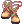

Reno's Full Support Arch Bishop Guide
I’m known as Reno among my friends. My main character is an Arch Bishop (AB), and I’ve been in a love-hate relationship with this job class ever since I began playing Renewal. I’ve mostly played as a Full Support (FS) build, although recently I’ve been experimenting with both FS and hybrid builds in PvM and BG environments. This section of the guide discusses the most common AB build, which is FS. Exorcist AB is discussed in Reno's Exorcist Arch Bishop Guide.
Although it says “Guide” on the title, a lot of the contents are based on my personal experience and observations; it’s partially a report/compilation of test results as well. I encourage you to use this guide as a starting point to find what skills and equipment setup works best for you.
Briefing
The traditional Full Support (FS) Arch Bishop (AB) is an essential member in any party. They're the most common type of AB that guilds, whether casual or competitive, would always need. Although they have limited damage capability compared to other magic-based job classes, they make up for it with their recovery, defensive, and buff skills. When played well, FS ABs can also be formidable tanks and decent debuffers.
Although it's possible to create an FS AB as your first character, players commonly create an AB as a side character/buffer in another account separate from their main account, and use a DPS-type character to level up the AB. With that said, it's still possible for an FS AB to level up alone before they reach Lv 100 by using their HP restoring skills on Undead element monsters. After that they would shift to party play, taking the role of primary healer and support. However depending on your preferred play style and equipment, an AB can also branch out to secondary roles such as off-tank, debuffer, and additional damage dealer against Undead element enemies (and if you have Sanctuary, against Demon race enemies too).
On the other hand, ABs usually play exclusively as defensive support in PvP, Battlegrounds (BG), and War of Emperium (WoE). Their job is to make it easier for their teammates to defeat the enemy team though not always by healing their teammates, because potions are easily affordable in NovaRO Battlegrounds/WoE. They would have to use defensive skills such as Pneuma to defend Barricades; restore the durability (HP) of Guardian Stones and Barricades with Renovatio; Safety Wall/Pneuma and Kyrie Eleison/Praefatio to protect themselves and their teammates against enemy attacks; remove negative status effects such as Burning, Crystallization, and Stasis with Lauda Agnus, Lauda Ramus, and Status Recovery; soften enemies with Decrease Agility, Lex Aeterna, Lex Divina, and/or Silentium to make them more vulnerable to attacks, and so on. With that said, I will not focus much on PvP, BG, and WoE in my guide, as I am much more knowledgeable and experienced in PvM.
Due to their potential for filling in multiple roles in a party (especially in PvM), I will not provide fixed stats and skill build, although I will describe some essential stats and skills any AB will need. I will also provide a list of equipment recommendation sorted by the relative difficulty of obtaining them, which will be regularly updated whenever new equipment for ABs are implemented. You can use the View History link on top right of the page to check the latest edits and updates.
The equipment recommendation would not be listed by build because many of them overlap, although I will point out how would they benefit an AB. This is because I don't want to dictate anybody, and you will not play your AB exactly like how I play mine, and no one will play their AB exactly like you. It's all fine and dandy as long as they fill in their roles and get the job done, and healing can be a dirty job but someone's gotta do it and take one for the team.
With this guide, I hope to give you a starting point to help customize your AB however you want to, while taking into consideration your preferred play style, your relative experience level with the job class and its role(s), and how much you're able and willing to invest into it.
Stats
| Stat Bonus (Job Lv 60 Arch Bishop) | |||||
|---|---|---|---|---|---|
| STR | AGI | VIT | INT | DEX | LUK |
| +6 | +5 | +7 | +10 | +7 | +2 |
The main stats of a Full Support Arch Bishop are INT, DEX, and VIT.
- INT is important, as it increases the healing amount of recovery skills, increases MaxSP, improves the efficiency of SP recovery potions, and reduces Variable Cast Time of skills. Anywhere between 100-120 INT is acceptable.
- DEX reduces Variable Cast Time of skills at twice the effectiveness of INT. Variable Cast Time can be eliminated when your stats amount to (DEX * 2) + (INT) = 530. However it's important to note that your stats have no effect on Fixed Cast Time. Anywhere between 100-120 DEX is acceptable. Adjust INT and DEX according to the gears and buffs that you can afford.
- 120 Base DEX is a must if you are planning to wear
 Temporal DEX Boots [1], in order to gain the Fixed Cast Time reduction from the footgear. See Temporal Boots.
Temporal DEX Boots [1], in order to gain the Fixed Cast Time reduction from the footgear. See Temporal Boots.
- 120 Base DEX is a must if you are planning to wear
- VIT is necessary for MaxHP and survivability. While leveling as an Acolyte/High Acolyte, Priest, and High Priest, you can most likely get by with low VIT and wearing Eden Equipments, since few monsters under Lv 100 can one-shot you (just remember to use the Novice Potions and wear your Eden Equipments after completing Instructor Boya's quests!). For debuff resistance purposes, use the following examples and adjust as necessary:
- 85 Base VIT + 7 VIT (from Job Lv 60 Bonus) + 8 VIT (from
 Lauda Agnus Lv 4) = 100 VIT
Lauda Agnus Lv 4) = 100 VIT - 87 Base VIT + 7 VIT (from Job Lv 60 Bonus) + 6 VIT (from Thanatos Staff [1]. See Ghost Palace) = 100 VIT
- 88 Base VIT + 7 VIT (from Job Lv 60 Bonus) + 5 VIT (from VIT Shadow Gear Set) = 100 VIT
- 93 Base VIT + 7 VIT (from Job Lv 60 Bonus) = 100 VIT
- 90 or 108 Base VIT if you're planning to wear an Armor with
 Dame of Sentinel Card, in order to gain the DEX bonus from the card.
Dame of Sentinel Card, in order to gain the DEX bonus from the card. - 110 Base VIT is a must if you are planning to wear
 VIT Glove [1] (purchasable in Eclage with Splendide Coins), in order to gain the MaxHP bonus.
VIT Glove [1] (purchasable in Eclage with Splendide Coins), in order to gain the MaxHP bonus. - 120 Base VIT is a must if you are planning to wear
 Temporal VIT Boots [1], in order to gain the MaxHP bonus from the footgear.
Temporal VIT Boots [1], in order to gain the MaxHP bonus from the footgear.
- 85 Base VIT + 7 VIT (from Job Lv 60 Bonus) + 8 VIT (from
The remaining stat points may be put into:
- AGI: Increases Attack Speed (ASPD), Flee, and debuff resistance (e.g. Sleep, Bleeding, Critical Wounds, Shadow Chasers' Masquerade skills). It makes your character’s casting animation to finish slightly faster (due to higher ASPD leading to faster casting animation) although the effect is very negligible, and you probably won’t feel a lot of difference unless you put in 90 AGI or higher, or wear a mace without a shield. For debuff resistance purposes, use the following examples and adjust as necessary:
- 77 Base AGI + 5 AGI (from Job Lv 60 Bonus) + 18 AGI (from
 Canto Candidus Lv 3 cast by an Arch Bishop at Job Lv 60) = 100 AGI.
Canto Candidus Lv 3 cast by an Arch Bishop at Job Lv 60) = 100 AGI. - 83 Base AGI + 5 AGI (from Job Lv 60 Bonus) + 12 AGI (from
 Increase Agility Lv 10) = 100 AGI
Increase Agility Lv 10) = 100 AGI - Note that Canto Candidus will always overwrite Increase Agility, so the AGI bonus will not stack.
- 77 Base AGI + 5 AGI (from Job Lv 60 Bonus) + 18 AGI (from
- LUK: Slightly increases Magic Attack and Perfect Dodge, and debuff resistance. Aim to get (Base LUK) + (LUK from Job Bonus) = multiples of 3. For debuff resistance purposes, use the following examples and adjust as necessary:
- 13 Base LUK + 2 LUK (from Job Lv 60 Bonus) + 30 LUK (from
 Gloria) = 45 LUK
Gloria) = 45 LUK - 19 Base LUK + 2 LUK (from Job Lv 60 Bonus) + 30 LUK (from Gloria) - 6 LUK (from Thanatos Staff [1]) = 45 LUK
- 20 Base LUK + 2 LUK (from Job Lv 60 Bonus) + 30 LUK (from Gloria) + 8 LUK (from
 Lauda Ramus Lv 4) = 60 LUK.
Lauda Ramus Lv 4) = 60 LUK.
- 13 Base LUK + 2 LUK (from Job Lv 60 Bonus) + 30 LUK (from
- STR: If you are still saving up/playing the Slot Machine to get Gym Passes, you can put some points into STR to increase your Weight Limit (item carrying capacity). See Cash Shop and Gold Coins.
Stat Build Examples
The build I used for the longest time was the Temporal DEX Boots + VIT Glove build, which requires me to invest a lot of stat points in DEX and VIT for the equipment bonuses to apply. In certain cases where I rarely find myself tanking additional mobs, sacrificing some VIT and putting the points in AGI helps with resisting debuffs such as Bleeding, Sleep, and Masquerade skills of Shadow Chaser. The additional Flee from having higher AGI also helps with dodging Hell's Judgement and physical attacks that may inflict debuffs such as Coma and Critical Wounds, and investing some points in LUK also helps in reducing the chance of being inflicted by Coma. However, Flee can not help you against Earthquake, as it is considered a magic attack.
I also have been getting questions about Arc Angeling Card and its usefulness. I have never owned one but I'm thinking its additional SP regeneration effect may be helpful, so I added a possible stat build for it.
The values listed in the following table are BASE STAT values. Stat bonuses from Job Bonus, equipment, clan buffs, and so on are excluded. I'm using this status calculator to come up with a range of stat values in the following table.
| Temp DEX Boots + Vit Glove | Temp VIT Boots | Speedy Tanker/Caster | Arc Angeling Card Build | |
|---|---|---|---|---|
| STR | Adjust as necessary | Adjust as necessary | Adjust as necessary | Adjust as necessary |
| AGI | 50 ~ 70 | 50 ~ 70 | 70+ | 30 ~ 70 |
| VIT | 110 | 120 | 93 | 70 ~ 100 |
| INT | 100 ~ 120 | 100 ~ 120 | 100 ~ 120 | 100 ~ 120 |
| DEX | 120 | 120 | 120 | 120 |
| LUK | 1 ~ 28 | 1 ~ 28 | 1 ~ 28 | 77 |
Do note that you can stack +10 Stat Food items with +20 Stat Food items (crafted with Genetic skill  Mixed Cooking). For example, you can consume Soul Haunted Bread (DEX +7) (obtainable from Sara's Memory instance) and
Mixed Cooking). For example, you can consume Soul Haunted Bread (DEX +7) (obtainable from Sara's Memory instance) and  Siroma Iced Tea (DEX +20) to gain DEX +27. However if you consume
Siroma Iced Tea (DEX +20) to gain DEX +27. However if you consume  Hwergelmir's Tonic (DEX +10) (obtainable from Mysterious Slot Machine) afterwards, it will overwrite the effects of Soul Haunted Bread, and you'll gain DEX +30. Hopefully this explanation helps you understand various ways on minimizing Variable Cast Time.
Hwergelmir's Tonic (DEX +10) (obtainable from Mysterious Slot Machine) afterwards, it will overwrite the effects of Soul Haunted Bread, and you'll gain DEX +30. Hopefully this explanation helps you understand various ways on minimizing Variable Cast Time.
Why am I mentioning so many skills and items of other job classes and skills of monsters, even though supposedly this is an Arch Bishop guide? This is because some of the most important skills that someone who takes the role of healer must learn is to be resourceful, well-prepared, adaptable, communicative, and cooperative.
Being communicative and cooperative are especially important, because in some cases your recovery skills may not work on everyone. For example players wearing Evil Druid carded Armor can't receive any HP recovery skills; Mechanics in Mado Gear can only receive healing from Sanctuary; Rune Knights in Berserk status can only receive healing from Epiclesis; and players inflicted by Hell's Power cannot be revived with Resurrection. Checking with your party members before fighting enemies that inflict Stone Curse or Poison, and checking with the Minstrel/Wanderer in your party to see if they have Death Valley and carry Regrettable Tears before fighting Satan Morroc in Endless Cellar would be prudent. Cooperating with your friends and teammates is half the fun of playing this job class and in Ragnarok Online, after all.
You are sorely mistaken if you think playing an AB is as simple as buffing everyone then autofollow and sit back until you have to rebuff, or until someone dies and asks for ress. You would be no better than an alt AB, or a walking supply of Potions, Yggdrasil Leaves, and buff scrolls. To play the role of healer and support and to play it well, you need a good understanding about your own class, and a broad knowledge about other job classes and enemies that you may face. In other words, the role of healer may not be for everyone to play.
With that in mind, let's continue to the next section; skills.
Skills
Quick Build Reference
I will not provide fixed skill builds in this section. Instead, I will provide some basic skill builds with some skill points left on them, for you to distribute into skills that you need. The reason for this is because PvM- and PvP/BG/WoE-focused ABs will not have the exact same skill builds, as they face different restrictions and follow slightly different rules, especially in BG and WoE. Even PvM-focused ABs would have minor variations to their skill build, which will depend on the challenges and demands they face, the size and composition of the party, skills used by monsters and boss monsters, and the specialized roles they choose, which may range from rear-line pure healer to front-line tanky healer. With that said, the following build reference will show a very basic build consisting of skills that Arch Bishops are expected to have.
Acolyte/High Acolyte
Skill points are tight as an Acolyte, as you have 49 skill points at Job Lv 50. Whether you're leveling on your own or with other people, focus on getting Heal and Increase Agility to Lv 10 first.

Acolyte skills:
- Ruwach Lv 1, Teleport Lv 2, Warp Portal Lv 4, Pneuma Lv 1: Basic utility, mobility, and defense skills. Do not skimp out points on these skills. Teleport level is selectable but Warp Portal is not.
- Divine Protection Lv 5: Pre-requisite for Blessing.
- Heal Lv 10, Increase AGI Lv 10, Blessing Lv 10
- Coluceo Heal, Canto Candidus, and Clementia are based on the skill level of your Heal, Increase AGI, and Blessing.
- For PVM, you should always max out Heal, Increase AGI, and Blessing.
- For WOE/BG, you absolutely and most definitely must always max out Increase AGI and Blessing. Most players in WOE and BG rely on potions, so you can leave Heal at Lv 3 as prerequisite for Increase AGI.
- Aqua Benedicta Lv 1, Angelus Lv 2: Pre-requisite for Priest skills.
- Cure Lv 1: Important basic debuff recovery skill, especially against enemies that can inflict Chaos, and to help job classes with low resistance against Silence.
- Decrease AGI Lv 2: Leftover skill points. For ABs going to WOE/BG/PVP, you may put more skill points here to debuff enemy players.
- Holy Light: Quest skill. This skill can be insta-cast and has ASPD-based cooldown. It can be used to cancel an enemy's Kyrie Eleison. Having Priest Spirit buff from Soul Linker/Soul Reaper increases the damage.
Priest/High Priest
As a Priest, you will have 49 skill points; 69 skill points if you are a High Priest. Getting Magnificat and Increase SP Recovery will give you a much needed relief in terms of SP regeneration. If you're a High Priest, Meditatio will also improve your SP regen, MaxSP, and healing skills. After that you may focus on getting recovery skills (Status Recovery, Resurrection, Sanctuary), defensive skills (Kyrie Eleison, Assumptio, Safety Wall), and/or buff skills (Impositio Manus, Aspersio).
Priest skills:
- Kyrie Eleison Lv 4, 6, 8, or 10: The level of KE doesn't affect Praefatio but it's useful to have KE and cast it while Praefatio is still on cooldown. You can also use KE Lv 1 offensively to remove Assumptio from a target.
- Kyrie Eleison cannot be used to refresh the duration of Praefatio, regardless of KE's and Praefatio's levels.
- Magnificat Lv 3 - 5: Essential for your and your party's SP regen. You should always keep Magnificat up in parties. Magnificat level is not selectable and you'll always use the highest level you've learned.
- Status Recovery Lv 1
- In PVM this skill is essential to deal with debuffs like Frozen, Stone Curse. Also to help job classes with low resistance against Stun, and to remove White Imprison.
- In WOE this skill is also used to remove Stasis.
- Resurrection Lv 3 - 4
- In PVM it's important to have max Resurrection. You may prefer lower level Resurrection to reduce its After Cast Delay. Resurrection Lv 1 is essentially the same as using Yggdrasil Leaf. Additionally, using Resurrection on Undead property, non-Boss monster is the same as using Turn Undead of the same level. Resurrection level is not selectable and you'll always use the highest level you've learned.
- In WOE/BG you don't need this skill so you can get away with Resurrection Lv 0.
- Increase SP Recovery Lv 4 - 5: Lv 3 is pre-requisite for Assumptio, Lv 4 for Resurrection, and Lv 5 for Meditatio.
- Lex Divina Lv 5: Pre-requisite for Lex Aeterna.
- Lex Aeterna Lv 1: Essential debuff on enemies which improves your party's DPS. With high ASPD, and minimum to no After Cast Delay, you can spam Lex Aeterna faster.
- Impositio Manus Lv 3 - 5: Lv 3 is pre-requisite for Safety Wall. Higher level increases the ATK bonus.
- Sanctuary Lv 3 - 7: Lv 3 is pre-requisite for Safety Wall. The amount of HP restored by Sanctuary is maxed at Lv 7, and higher skill level only lengthens the duration.
- Aspersio Lv 4 - 5: Lv 4 is pre-requisite for Safety Wall. Higher skill level only lengthens the duration.
- Safety Wall Lv 10: Essential defensive skill to protect yourself and tanks from melee physical damage. You get this at Lv 10, or you don't.
- Redemptio: Quest skill. This emergency mass Resurrection skill takes about 3 seconds to cast with 100% VCT redux, 50% FCT redux, and 0.5 sec FCT redux. You should prepare consumables like Yggdrasil Seed/Berry if you're expecting to use Redemptio. Essential for some medium to high level party dungeons and instances.
Other Priest skills:
- Gloria: Other than for item crafting and brewing (e.g. Pharmacy, Create Deadly Poison, Rune stone crafting), few other classes and builds really need the extra +30 LUK. It gives a little extra ATK, MATK, Perfect Dodge, and debuff resistance but it can be a hassle to keep recasting Gloria, as it interferes with all your party members' casting and attacking animation. On the other hand, Gloria would be useful to have if you plan to use Turn Undead. Gloria level is not selectable and you'll always use the highest level learned. Lv 2 is pre-requisite for Basilica.
- B. S. Sacramenti: Similar to Royal Guard skill Piety, it applies Holy Lv 1 property on the armor of players. However the skill requires some silly and incredibly impractical arrangements to be cast, so it's not recommended to put points in it.
- Slow Poison: Do not waste points in this skill. Carry Green Potions or Green Herb. You can also outheal the Poison until it goes away naturally.
- Mace Mastery: Full Support builds do not need this skill. Lv 10 is pre-requisite for Mana Recharge/Spiritual Thrift, which is only beneficial for Battle Bishop builds with low INT and MaxSP.
- Suffragium: Currently can only be cast on other players and can't be cast on yourself. Although 45% Variable Cast Time reduction is nice for low level characters, at higher levels Suffragium is neither incredibly necessary nor highly beneficial, unless you or your allies are very concerned with min-maxing.
- Turn Undead: Lv 1 is pre-requisite for Judex, amd Lv 3 is pre-requisite for Magnus Exorcismus. At Lv 10 and with Gloria, high INT and LUK, this is an excellent skill to have if you plan to level or farm Undead property, non-Boss monsters like Anubis or Dark Priest. Turn Undead level is not selectable and you'll always use the highest level learned. Pure Full Support build usually would skip this skill entirely.
- Magnus Exorcismus: Full Support build usually would skip this entirely. Lv 1 is pre-requisite for Adoramus.
High Priest skills:
- Mana Recharge: Requires you to invest 20 points in two passive skills to unlock it, and 5 points to max it out. As Full Support build your skill points are better invested in other skills. Do not take this skill.
- Assumptio Lv 3 - 5: More suitable on tanks with high Hard DEF. Higher skill level increases the duration.
- Basilica: An impressive defensive skill in writing but it's impractical, slow and costly to cast, and requires precise coordination from yourself and your allies (e.g. rear line and front line tanks like Sura, RG, Warlock) to set up properly. Even with 100% Variable Cast Time reduction, 50% Fixed Cast Time reduction, and 0.5 second FCT reduction, Basilica Lv 5 takes about 4 seconds to cast. You can't move and cast skills while Basilica is up. You can only sit, change direction (with /bingbing and /bangbang), or recast Basilica to cancel it.
- Meditatio Lv 5 - 10: Essential passive skill for ABs, it permanently increases MaxSP, improves SP regen, and increases HP restored by Heal, Coluceo Heal, and Highness Heal.
Arch Bishop
As an Arch Bishop you will have 59 skill points but it's going to take 32 skill points to learn Sacrament Lv 5; with Canto Candidus Lv 3, it will take 35 skill points. It's a good idea to learn the party buff skills first (Clementia, Canto Candidus, Praefatio, Coluceo Heal) when you have just job changed into Arch Bishop.
Arch Bishop skills (pre-requisites for Sacrament and Sacrament):
- Coluceo Heal Lv 3, Renovatio Lv 1:
- HP restored by Coluceo Heal depends on HP restored by the highest level of Heal you've learned. Ideally FS ABs should have Heal Lv 10. Having more party members will increase HP restored by Coluceo Heal.
- Currently Renovatio has a long cast time (1 second with 100% VCT redux, 50% FCT redux, and 0.5 sec FCT redux) and is single target. For best results, cast it on yourself then your tank.
- Highness Heal Lv 1 - 5: Lv 1 is pre-requisite for Sacrament, Lv 2 for Offertorium. At lower levels you can get by with HH Lv 1 but ideally a max level FS AB should have HH Lv 5. WOE/BG ABs can get by with HH Lv 2.
- HP restored by Highness Heal is based on amount of HP restored by Heal Lv 10, whether you have it learned at that level or not. Meditatio also increases HP restored by Highness Heal.
- Clementia Lv 3: Bonus STR, INT, and DEX applied by Clementia depends on the highest level of Blessing you've learned, and your Job Level (additional STR INT and DEX +1 every 10 Job Lv). Ideally all FS ABs should have Blessing Lv 10.
- Ancilla Lv 1, Epiclesis Lv 1 or 3 or 5: Ancilla (the item) and Holy Water are consumed to cast Epiclesis. While Epiclesis Lv 1 is sufficient for an additional SP regen, Epiclesis Lv 5 is more beneficial for classes and skills that rely on having high MaxHP (e.g. Dragon Breath).
- Praefatio Lv 5 - 10
- Praefatio level is not selectable and you'll always use the highest level learned. Higher level Praefatio blocks more hits but also has longer cooldown. It's a good idea to recast Praefatio as soon as the cooldown expires.
- Sometimes a party member's barrier breaks while your Praefatio is still on cooldown. It's a good idea to keep KE bound to your hotkeys to apply emergency barrier on them.
- Your level of KE will not affect Praefatio in any way. Casting KE will not refresh Praefatio's duration.
- Oratio Lv 5 - 10: For best results, use with Aspersio, or when allies use Holy property weapons or spells. Oratio works against Boss protocol monsters and on Hiding/Cloaking enemies.
- Duple Light Lv 5: Self-buff that's more beneficial for Battle Bishops, FS ABs take this skill only as pre-requisite for Sacrament.
- Expiatio Lv 1: This skill does not endow players' weapon with Holy property. Instead, it temporarily allows their physical attack and skills to pierce/ignore the physical defense of the enemy.
- Sacrament Lv 5: The signature AB buff that reduces FCT by 50%, and it is only beaten by Fenrir Card (which reduces FCT by 70%). Percentage based FCT does not stack but Sacrament can be stacked with temporal based FCT redux from Temporal DEX Boots and Zaha Doll Hat.
Other Arch Bishop skills:
- Canto Candidus Lv 3: Bonus AGI applied by Canto Candidus depends on the highest level of Increase AGI you've learned, and your Job Level (additional AGI +1 every 10 Job Lv). Ideally all FS ABs should have Increase AGI Lv 10.
- Offertorium Lv 1 - 5
- In PVM, some FS ABs take Offertorium Lv 5 to maximize their healing, while others take Lv 1 for the debuff removing effect and invest skill points elsewhere.
- In WOE/BG, you should at least have Offertorium Lv 1 so you can remove debuffs from yourself.
- Lauda Agnus and Lauda Ramus Lv 2 - 4: Essential party debuff recovery skills, FS ABs in PVM, WOE, and BG should max these out. Lv 2 Lauda Agnus and Lv 2 Lauda Ramus are pre-requisites for Clearance.
- Clearance Lv 1 - 5: This skill works like Dispell but it only works on yourself, your party members, and non-Boss monsters. You can't use Clearance on Boss monsters and on other players who are not in your party.
- Usually used to remove Steel Body from Sura, Super Novice, or Berserk from Rune Knight.
- Silentium: Essentially player-based AoE (PBAoE) Lex Divina. Personally I rarely see anyone use this in PVM, BG, or WOE, and I don't recommend putting points in it.
- Judex: With Sacrament, Temporal DEX Boots, ACD redux and VCT redux, this skill is highly spammable and can be used to fend off stragglers or trigger magic-based gear effects like Reckless Magic or Wickebine's Black Cat Ears.
- Adoramus: FS ABs usually would skip this skill entirely. Hybrid or Exorcist ABs may have this skill and mostly use it against Shadow and Undead property enemies.
- Eucharistica: A skill so useless for most AB builds I've worked on, I personally often forget it exists. It's probably only beneficial for Melee/Battle Bishops, or tank ABs who's overly concerned with reducing damage from Undead and Shadow property enemies. Currently in kRO this skill has been removed and replaced with a new skill. For now I recommend not putting any skill points in it.
Skill Information
The following sections go into more detail on Full Support skills, including brief descriptions of what they do, and when they can be useful. Many of their skills are situational so it's important to tailor your build to your particular needs. A PvM-focused FS AB will not have the exact same skills as a PvP/BG/WoE-focused AB.
Acolyte Skills
| Skill | Level | Remarks |
|---|---|---|
 Heal Heal
|
10 |
|
 Blessing Blessing
|
10 |
|
| Increase Agility
|
10 | |
 Ruwach Ruwach
|
1 |
|
 Teleport Teleport
|
2 | |
 Warp Portal Warp Portal
|
4 | |
 Pneuma Pneuma
|
1 | |
 Aqua Benedicta Aqua Benedicta
|
1 |
|
 Angelus Angelus
|
2 - 10 | |
 Decrease Agility Decrease Agility
|
1 - 10 |
|
 Cure Cure
|
1 |
|
 Holy Light Holy Light
|
1 |
|


Priest Skills
| Skill | Level | Remarks |
|---|---|---|
 Kyrie Eleison Kyrie Eleison
|
4, 6, 8, or 10 |
|
| Gloria
|
3, max 5 |
|
 B.S. Sacramenti B.S. Sacramenti
|
1, max 5 |
|
 Magnificat Magnificat
|
3, max 5 |
|
 Slow Poison Slow Poison
|
1, max 4 |
|
 Status Recovery Status Recovery
|
1 |
|
 Resurrection Resurrection
|
2, max 4 |
|
 Increase SP Recovery Increase SP Recovery
|
4, 5, max 10 |
|
 Lex Divina Lex Divina
|
5, max 10 |
|
 Lex Aeterna Lex Aeterna
|
1 |
|
 Impositio Manus Impositio Manus
|
3, max 5 |
|
 Suffragium Suffragium
|
1, max 3 |
|
 Sanctuary Sanctuary
|
3 or 7, max 10 |
|
 Aspersio Aspersio
|
4, max 5 |
|
 Safety Wall Safety Wall
|
10 |
|
 Redemptio Redemptio
|
1 |
|


A lot of Priest class skills have long global cooldown (also known as After Cast Delay) that can be reduced with Bard class skill  Poem of Bragi. If you don't have a Bard around, you can stack as much After Cast Delay reduction gears as possible instead. Please refer to the Equipments section for more details.
Poem of Bragi. If you don't have a Bard around, you can stack as much After Cast Delay reduction gears as possible instead. Please refer to the Equipments section for more details.
High Priest Skills
Baby Arch Bishop and non-transcendent Arch Bishops will not be able to learn these skills.
| Skill | Level | Remarks |
|---|---|---|
 Assumptio Assumptio
|
0 - 5 |
|
 Basilica Basilica
|
0 - 5 |
|
 Meditatio Meditatio
|
1 - 10 |
|
| Spiritual Thrift | 0 - 5 |
|


Assumptio and Meditatio are essential for Full Support builds, however Basilica is a very situational skill.
If the party has a front line tank and a Devotion Crusader/Paladin/Royal Guard, and if the party does not have a Sage/Professor/Sorcerer that can cast Land Protector to protect the tanks, you can use Basilica instead to protect the Devotion-using Crusader and yourself. Think carefully of your party's composition and where your party is going to before you pick up Basilica.
Arch Bishop Skills
| Skill | Level | Remarks |
|---|---|---|
 Coluceo Heal Coluceo Heal
|
3 |
|
 Renovatio Renovatio
|
1 |
|
 Highness Heal Highness Heal
|
2 - 5 |
|
 Offertorium Offertorium
|
1 - 5 |
|
 Clementia Clementia
|
3 |
|
| Canto Candidus
| ||
 Ancilla Ancilla
|
1 |
|
| Epiclesis | 1, 3, or 5 |
|
 Praefatio Praefatio
|
5 - 10 |
|
| Oratio | 5 - 10 |
|
 Duple Light Duple Light
|
5, max 10 |
|
 Expiatio Expiatio
|
1 - 5 |
|
 Sacrament Sacrament
|
Max 5 |
|
| Lauda Ramus
|
2 - 4 |
|
| Lauda Agnus
|
2 - 4 |
|
 Clearance Clearance
|
1 - 5 |
|
 Silentium Silentium
|
1 - 5 |
|
 Odin's Power Odin's Power
|
1-2 |
|


Unlike Priest and High Priest class skills, many Arch Bishop class skills have an individual cooldown, which cannot be reduced with the Bard class skill Poem of Bragi. With that said, it also allows you to quickly chain one buff skill to another. Still, similarly to Priest and High Priest class skills, many Arch Bishop skills are somewhat situational.
Offertorium, for example, may seem like an important skill to max out in PvM, however I personally don't use this skill very often. Instead, I rely on combining Coluceo Heal, Highness Heal, and Sanctuary to maintain my party's health. In WoE environments, the only time I need Offertorium is not when I need to heal my allies; rather, I use it to cure Mandragora Howling from myself due to its incredibly fast cast time despite having the Slow Cast debuff from Mandragora Howling.
This is the reason why I do not provide a fixed skill build for Arch Bishops. Many of their skills are only useful in certain, or even very specific, conditions, and are beneficial for different job classes and different builds. In my opinion, the most important skills for Full Support Arch Bishops to learn are to adapt themselves depending on what their party needs, and to communicate and cooperate with fellow Arch Bishops, and other support-oriented and tank-oriented job classes.
Skill Management Tips
Oh geez, that’s a lot of skills!
Those new to playing Arch Bishop may feel overwhelmed by the number of skills, the apparent lack of hotkey slots, and worry that they’ll mess up during a crucial moment. Here’s some tips:
- Organize skills in your hotkeys according to how you target them, and by their duration.
- For example, you can group AoE party buffs (Angelus, Magnificat, Praefatio) in the first row, single target buffs (Increase AGI, Assumptio, Sacrament) in the second row, ground-targeting skills (Pneuma, Safety Wall, Epiclesis) in the third row, and lastly spare equipments, healing items, or Player-Based AoE skills (Oratio, Silentium) in the fourth row.
- Put spammable skills or skills with short duration closer to your hand’s default position on the keyboard, and skills with long duration/cast time/cooldown/reuse delay a bit further.
- For example, Expiatio Lv 3 and higher lasts longer than Odin’s Power, and Odin’s Power has no cooldown and no reuse delay but it lasts as long as Impositio Manus, which has a 3 second global delay. They’re all single target buffs, so put them in the same row, next to each other (Expia -> Odin’s -> Impo), and just roll-click through them to buff.
- Another example: Clementia, Canto Candidus, Praefatio, Magnificat, Angelus, Lauda Ramus, and Lauda Agnus are commonly-used party buffs. However Magnificat and Angelus are notorious for having long global cooldown, while your 3rd class buffs can be chained one after another. Put these chain-able party buffs next to each other, and put the party buffs with long global cooldown a bit further. This is to prevent you from accidentally casting them and leaving yourself vulnerable for a few seconds.
- Skill rotation examples:
- Sacrament (yourself) > Clementia > Canto Candidus > Praefatio > Lauda Agnus > Lauda Ramus > Magnificat > Angelus (if necessary) > Gloria (if necessary)
- Tank: Sacrament (Royal Guards and Suras would appreciate this) > Renovatio > Assumptio or Kyrie Eleison (adjust to their needs. Never cast Odin's Power on your tank!)
- Physical DPS: Sacrament (only if requested, otherwise skip this) > Expiatio > Odin's Power > Impositio Manus (if necessary and if you have a Bard class supporting you)
- Magic DPS: Sacrament > Odin's Power
- When party members are at full health and buffed, proceed to debuffing enemies with Oratio and Lex Aeterna. You can cast Odin's Power on the enemy to reduce their DEF and MDEF... HOWEVER! If you, your co-healer, and your tank are struggling against it, do not cast Odin's Power on the enemy! Softening the enemy's defenses to make it easier for the DPS to kill is not worth putting yourself, your co-healer, and your tank at risk.
- Use the /q2 command to use anything assigned to F7 and F8 by scrolling up or down.
- Useful for spamming PBAoE skills, healing items, or swapping equipments. You won’t be able to change your camera’s zoom level when /q2 is activated.
- This command is really handy when you have to swap gears to use skills (i.e. Bible of Promise to use Odin’s Power).
Recommended Gears
Before you start farming gears for your AB, first you have to ask yourself; What kind of AB do I want to be?
Even though FS AB seems like a simple, fool-proof build, I’ve found that it’s possible to tailor it in several different ways depending on gears I have at the time, and what I can obtain. Being the quintessential healer class, most would probably consider reaching the highest Heal amount possible is the ultimate goal. I personally prefer being a tanky healer with relatively fast cast time, ensuring the survival of myself and my party 100% of the time being my ultimate goal.
So there are three ways you can gear up an AB:
- Heal a lot in order to mitigate damage, a.k.a. Classic Healer.
- Your primary stats and enchants would revolve around INT.
- You'd want to wear equipment that increase the HP recovery amount of your healing skills (Heal, Coluceo Heal, Highness Heal, Renovatio, Sanctuary).
- Some equipment like Light of Recovery and enchants specific to Empowered Wand of Affection will increase the effectiveness of your HP recovery skills while increasing their SP cost (thus making you effective but not efficient!).
- You have to mind your SP at all times, and consider wearing equipment that increase your SP recovery rate, or reduce your skills' SP cost, or use items such as
 Vitata500 and
Vitata500 and  Increase SP Potion; both can be crafted with
Increase SP Potion; both can be crafted with  Special Pharmacy.
Special Pharmacy.
- Be a tanky healer by stacking reduction gears and MaxHP boosts in order to survive longer, a.k.a. Undying Healer.
- You'll have to carefully select your Headgear, Armor, Shield, Garment, and Footgear, and be prepared to swap them around depending on what your party is dealing with.
- Collect racial resist cards, elemental resist cards, and debuff resist cards, and put them in the appropriate equipment. You may have to carry multiple spare equipment.
- You'd want to consider wearing equipment that increase the effectiveness of healing skills you receive from others, such as
 Benevolent Guardian [1] and Bangungot Agimat Tattoo. You may also consider using items such as
Benevolent Guardian [1] and Bangungot Agimat Tattoo. You may also consider using items such as  Enriched White PotionZ and
Enriched White PotionZ and  Increase HP Potion; both can be crafted with Special Pharmacy.
Increase HP Potion; both can be crafted with Special Pharmacy. - Unlike melee/physical tanks like Sura, Royal Guard, and Rune Knight, or high Flee tanks like Guillotine Cross and Expanded Super Novice, an Arch Bishop withstands damage using Safety Wall, Kyrie Eleison/Praefatio, Assumptio, and uses their healing skills to mitigate damage (using Offertorium while tanking is completely optional, though I personally deem it not highly necessary). Of course, you could spam potions too but AB have a much lower weight limit than the classes mentioned just now, limiting the amount of potions they can carry.
- Tanking as an AB is similar to tanking as a Warlock with
 White Imprison, with the added bonus of being able to heal yourself, and stacking a small amount of damage when tanking Undead element and Demon race monsters by placing Sanctuary beneath yourself and the enemy you're tanking, thus maintaining aggro (making it less likely for the enemy to change target from you). Multi tasking like a boss!
White Imprison, with the added bonus of being able to heal yourself, and stacking a small amount of damage when tanking Undead element and Demon race monsters by placing Sanctuary beneath yourself and the enemy you're tanking, thus maintaining aggro (making it less likely for the enemy to change target from you). Multi tasking like a boss! - As a tank AB, you would not be completely screwed over by
 Dispell (which is a huge disadvantage of almost all melee/physical tanks, since rebuffing consumes a lot of SP and takes time), however you will have great difficulty tanking enemies that can cast skills that remove your Safety Wall, such as Sage's
Dispell (which is a huge disadvantage of almost all melee/physical tanks, since rebuffing consumes a lot of SP and takes time), however you will have great difficulty tanking enemies that can cast skills that remove your Safety Wall, such as Sage's  Land Protector, High Wizard's
Land Protector, High Wizard's  Ganbantein, Royal Guard's
Ganbantein, Royal Guard's  Earth Drive, and Shadow Chaser's
Earth Drive, and Shadow Chaser's  Maelstrom.
Maelstrom. - You'll also have to carry a lot of Blue Gemstones for Safety Wall; I personally carry around 300 gems every run, sometimes more. Safety Wall spamming has a disadvantage over Warlocks with White Imprison; when tanking an enemy with high ASPD, and/or an MvP that summons a lot of slaves, Safety Wall would disappear faster, forcing you to keep spamming Safety Wall to tank. The burden can be lessened somewhat if there's a Wizard/Expanded Super Novice to use Quagmire, Dancer to use
 Slow Grace, or a Genetic that can throw Melon Bombs with Item Sling on the enemy you're tanking.
Slow Grace, or a Genetic that can throw Melon Bombs with Item Sling on the enemy you're tanking.
- Spam skills and spamming them quickly, a.k.a. Trauma Surgeon.
- Your primary stats and enchants would revolve around DEX, reducing Variable and Fixed Cast Time, and reducing After Cast Delay.
- Sacrament, getting 120 base DEX, and wearing Temporal DEX Boots are the primary ways of reducing Fixed Cast Time.
- Variable Cast Time can be minimized with more DEX and INT, and besides from enchanted equipment like Faceworm Skins, you can also consume food items such as Siroma Ice Tea and
 Warg Blood Cocktail to further reduce it; both can be crafted with Mixed Cooking.
Warg Blood Cocktail to further reduce it; both can be crafted with Mixed Cooking. - You have to rely on equipment to minimize After Cast Delay (a.k.a. global cooldown), or stick close to the Bard/Clown/Minstrel that plays Poem of Bragi. Even so, the idea of this sub-build is to still be capable of spamming skills significantly faster than normal even without Poem of Bragi.
- Unfortunately Poem of Bragi will not help much with skills that has its own cooldown, such as Highness Heal, Lauda Agnus, Lauda Ramus, and Clearance. You need specific equipment (some with certain enchant on it) to reduce skill cooldown, such as Light of Cure with Cure Lv 1 enchant for Highness Heal; complete Affection Set for Lauda Agnus and Lauda Ramus; Vellum Bible refined to +6 for Arch Bishops in WoE and Battlegrounds.
- Getting some AGI and ASPD will make your casting animation to finish slightly faster, and this helps with spamming skills a little.
- Spamming skills tend to be very draining on your SP, so you must always carry SP Potions, such as Vitata500 and Increase SP Potion.
- Other job classes can also support your SP regeneration and consumption, for example with Alchemist's
 Potion Pitcher Lv 5, Professor/Scholar's
Potion Pitcher Lv 5, Professor/Scholar's  Soul Change, Dancer's
Soul Change, Dancer's  Service for You, and Minstrels/Wanderers'
Service for You, and Minstrels/Wanderers'  Song of Mana.
Song of Mana.
I personally have had to be the secondary/tertiary tank while being the primary healer in numerous occasions, which is why I lean more towards being a tanky/front line healer than a spell-spamming/rear line healer. Keep in mind you are free to balance your gears or pick one style that best fits the needs of your AB and your party.
Specific gears such as the Affection Set, After Cast Delay reduction, and equipment that reduce skill SP consumption will be listed in this section, along with general equipment that will be listed according to the relative difficulty of obtaining them. Be sure to read the item descriptions carefully!
Beginner
Fresh newcomers can begin farming these gears (preferably on another character, not with their AB) while leveling up, or by browsing player shops in the NovaRO website (you have to be logged in), or in-game @go market and using the @whosells command.
Type @whereis (monster name) in-game to find out where monsters spawn, and use the @mi (monster name) command to view detailed monster information.
Here are some equipment sets for you to consider.
| Spiritual Ring Set | ||||
|---|---|---|---|---|
| Set pieces | Effect | How to obtain | Set bonus | |
| Accessory 1 |  Spiritual Ring (Lv 1) Spiritual Ring (Lv 1)
|
INT +2, DEX +1 | Dropped by Ifrit MVP, Fallen Bishop Hibram MVP. | Heal damage against Undead element monsters +50%.
SP Recovery +9%. Magnus Exorcismus damage +30%. |
| Accessory 2 | Clip [1] (Lv 1) | MaxSP +10 | Dropped by Alarm, Big Bell, Dragon Fly, Laurell Weinder. | |
| Rosary (Lv 20) | LUK +2, MDEF +5 | Purchase in Prontera Church. Dropped by Dark Priest, Nightmare Terror. | ||
 Rosary [1] (Lv 90) Rosary [1] (Lv 90)
|
LUK +1, MDEF +3 | Dropped by Aliza. | ||
If you often find yourself having to heal-bomb and level up on your own, wearing this set will be very helpful.
| Morpheus Set (Lv 33) | ||||
|---|---|---|---|---|
| Set pieces | Effect | How to obtain | Set bonus | |
| Top Headgear |  Morpheus's Hood Morpheus's Hood
|
INT +2 | Dropped by Hydrolancer/Hydro | Uninterruptible cast, Variable Cast Time +25%.
INT +5, MDEF +11, MaxSP +20%. |
| Garment | Morpheus's Shawl | MDEF +3, MaxSP +10% | Dropped by Aliza | |
| Accessory 1 |  Morpheus's Bracelet Morpheus's Bracelet
|
INT +1, MaxSP +5% | Dropped by Detale/Detardeurus MVP | |
| Accessory 2 |  Morpheus's Ring Morpheus's Ring
|
INT +1, MaxSP +5% | ||
Decent set for early leveling and will hold you over until you can afford better gears/cards for uninterruptible casting.
| Goibne Set (Lv 54) | ||||
|---|---|---|---|---|
| Set pieces | Effect | How to obtain | Set bonus | |
| Top Headgear |  Goibne's Helm Goibne's Helm
|
VIT +3, MDEF +3 | Dropped by Thanatos Dolor | VIT +5, MaxHP & MaxSP +5%, DEF +5, MDEF +15.
Resistance against Water, Wind, Earth, and Fire property +10%. |
| Armor |  Goibne's Armor Goibne's Armor
|
VIT +2, MaxHP +10% | Dropped by Thanatos Maero | |
| Garment |  Goibne's Spaulders Goibne's Spaulders
|
VIT +1, MDEF +2
resistance against long range physical damage +10% |
Dropped by Thanatos Odium | |
| Footgear |  Goibne's Greaves Goibne's Greaves
|
MaxHP & MaxSP +5%, MDEF +3 | Dropped by Thanatos Despero | |
A defensive-oriented set for a healer that does double duty as tank for their party. If you have the funds for better tank gears, feel free to skip this set. The whole set does not have slots for cards, and the armor alone weighs 350, which is pretty heavy for Priest class to wear.
| Odin's Armor Set (Lv 65) | |||
|---|---|---|---|
| Set pieces | Description | How to obtain | Full set bonus |
| Odin's Blessing [1] (Armor) | Has no effect on its own. Must be equipped to activate full set bonus. | Dropped by Skeggiold, Grizzly | VIT +5, HP & SP Recovery +10% |
| Vali's Manteau (Garment) | Neutral property resistance +15% | Dropped by Alicel | A decent set to hold you over until you can afford better armor, garment, and footgear (such as Giant Faceworm Skin + Temporal stat Boots). |
| Vidar's Boots (Footgear) | MaxHP & MaxSP +9% | Dropped by Deathword | |
| Frigg's Set (Lv 65) | |||
| Set pieces | Description | How to obtain | Full set bonus |
| Odin's Blessing [1] (Armor) | Has no effect on its own. Must be equipped to activate full set bonus. | Dropped by Skeggiold, Grizzly | DEF +2, MDEF +5.
All refine levels of the circlet and the shield will increase MDEF. |
| Fricca's Circlet (Top Headgear) | INT +2, MDEF +10, MaxSP +50 | Dropped by Hydrolancer/Hydro | Consider this set if you often have to deal with mobs that use/spam strong magic attacks. Valkryja's Shield is a great general-purpose shield that can go with you, long after you no longer need the armor and headgear set, and all the way to end-game instance dungeons, and in some PvP/BG/WoE situations. |
 Valkryja's Shield [1] (Shield) Valkryja's Shield [1] (Shield)
|
MDEF +5.
Resistance against Water, Fire, Undead, and Shadow properties +20%. |
Dropped by Valkyrie mini boss | |
| Ulle's Armor Set (Lv 65) | |||
| Set pieces | Description | How to obtain | Full set bonus |
| Odin's Blessing [1] (Armor) | Has no effect on its own. Must be equipped to activate full set bonus. | Dropped by Skeggiold, Grizzly | If base DEX is 70 or higher, Skill SP Cost -10%. |
 Ulle's Cap [1] (Top Headgear) Ulle's Cap [1] (Top Headgear)
|
DEX +2, AGI +1 | Dropped by Atroce MVP | A decent set to hold you over until you can afford better gears and potions for SP efficiency. |
Other gears for beginners:
| Type | Equipment | Description | How to obtain |
|---|---|---|---|
| Headgear |  Mitra [1] Mitra [1]
|
(Lv 100 Arch Bishop) Heal effectiveness +5%. INT +1, VIT +1, MDEF +5. If base INT is 120, MATK +10.
You will most likely wear this until you can afford other headgears that will be described in the Intermediate Equipment section. |
Obtained when job changing into Arch Bishop. |
| Armor |  Puente Robe [1] Puente Robe [1]
|
(Lv 22 Acolyte) Healing effectiveness +5%, Fixed Cast Time -3%.
This can hold you over until you can afford other Armors described in the Intermediate Equipment section. |
Dropped by Orc Lady, Sohee. |
| Divine Cloth [1] | (Lv 55 High Acolyte/High Priest) Resistance against Curse, Silence, Stun, Sleep, and Stone Curse +5%. | Dropped by Echio. | |
 Eden Group Armor Eden Group Armor
|
(Lv 60 Acolyte) MaxHP +500, MaxSP +50, MDEF +5. Cannot be refined.
Can be enchanted after completing more Eden Equipment Quest by talking to Toren in Eden HQ |
Complete Instructor Ur's Eden Equipment Quest for Lv 70-79. | |
| Weapon | Eden Group Staff III | (Lv 60 Acolyte
) INT +4, MATK +170. Cannot be refined.
Can be enchanted after completing more Eden Equipment Quests, by talking to Weapons Expert in Eden HQ |
Complete Instructor Ur's Eden Equipment Quest for Lv 70-79. |
 Healing Staff Healing Staff
|
(Lv 55 Acolyte) Weapon Lv 3. MATK +105. Every refine level, healing effectiveness +1.5% (rounded down). Please see Heal Boosting Gears section for more info.
If equipped with |
Dropped by Anubis. | |
 Principles of Magic [2] Principles of Magic [2]
|
(Lv 60 Priest) Weapon Lv 3. MATK 160, INT +3, SP recovery +5%. | Dropped by Mavka. | |
| Shield | Buckler [1] | Basic shield. | Dropped by Goblins and Kobolds. |
 Round Buckler [1] Round Buckler [1]
|
(Lv 22 High Acolyte) Another basic shield for trans class. | Dropped by Orc Warrior and Stalactic Golem. | |
 Bradium Shield [1] Bradium Shield [1]
|
(Lv 65 High Priest) MaxHP +500, AGI -1.
A rather heavy shield but still pretty decent for starters. |
Dropped by Bradium Golem. | |
| Footgear |  Vital Tree Shoes | (Lv 60 High Acolyte/High Priest) MDEF +3, VIT +2, MaxHP +10%, HP recovery +5%, recover 30 HP every 10 seconds. Healing effectiveness received from others +5%.
Decent footgear to hold you over until you can afford better ones. |
Dropped by Ancient Tree. |
| Accessory | Cat Hand Glove [1] | VIT +1, AGI +1, DEX +1, LUK +1. Basic accessory. | Purchase from Stinky Merchant in Malangdo /navi malangdo 172/145. See Malangdo Quests.
|
 Black Rosary [1] Black Rosary [1]
|
(Lv 90 Priest) MDEF +15.
This accessory goes well with |
Dropped by Wraith Dead and Dark Priest. |
Intermediate
Once you’ve got a good amount of Zeny, Cash Points, Gold Coins, and/or Proofs of Loyalty piled up, it’s time to upgrade. It's important to start doing instance dungeons and pre-requisite quests to access them at this stage, as many of the equipments listed here are obtainable from instances for Lv 120 and higher, or from doing quests and earning local currencies (e.g.  Mora Coin,
Mora Coin,  Splendide Coin,
Splendide Coin,  Gray Shard). Let's take a look at some equipment sets:
Gray Shard). Let's take a look at some equipment sets:
| Chibi Pope Set | ||||
|---|---|---|---|---|
| Set pieces | How to obtain | Effect | Set bonus | |
| Top Headgear |  Chibi Pope [1] Chibi Pope [1]
|
Purchase with Gold Coins in Main Office (see Daily Rewards) | Healing effectiveness +5%, MDEF +7. If refined to +6, increase healing effectiveness.
If refined to +9 or higher, MATK +7%. If refined to +12 or higher, additional MATK +5%. |
Additional healing effectiveness +10%. |
| Middle Headgear |  Blush Blush
|
Crafting quest | Required to activate set bonus. | |
 Blush [1] Blush [1]
|
Purchase Spiritual Auger (Cash Shop) and use it on a Blush. | |||
- This is the best Top and Middle Headgear set for healers looking to maximize their heal amount.
- For additional healing effectiveness, put Parus Card in Blush and in Chibi Pope, and refine Chibi Pope to even levels (+4, +6, +8).
- Avoid Rhyncho Card because it will increase your skills' SP cost.
| Sprint Set (Lv 70 High Acolyte/High Priest) | ||||
|---|---|---|---|---|
| Set pieces | Effect | How to obtain | Set bonus | |
| Armor |  Sprint Mail [1] Sprint Mail [1]
|
VIT +1, HP recovery +5%.
Healing item effectiveness and effectiveness of healing received from others +3%. |
Dropped by Cornus | MaxHP & MaxSP +7%.
Variable Cast Time -3%. After Cast Delay -15%. |
| Footgear | Sprint Shoes [1] | AGI +1, SP recovery +5%. | Dropped by Hillslion | |
| Accessory |  Sprint Ring Sprint Ring
|
Variable Cast Time -10%, After Cast Delay +5%. | Dropped by Luciola Vespa | |
- An old equipment set with good After Cast Delay reduction and other bonuses. This set can hold you over until you can get better gears and cards.
- All parts of Sprint Set are dropped by monsters in New World fields. See Cat Hand Services for details on how to access New World fields.
| Orleans' Set (Lv 90 High Acolyte/High Priest) | ||||
|---|---|---|---|---|
| Set pieces | Effect | How to obtain | Set bonus | |
| Shield | Orleans's Server [1] | MDEF +2. Has 5% chance of reflecting magic. | Dropped by Aliza | Variable Cast Time -10% |
| Accessory |  Orleans's Glove [1] Orleans's Glove [1]
|
DEX +2, MATK +3%. | Dropped by Bow Guardian | |
- Another old equipment set for Variable Cast Time reduction. Additionally you can also wear this with
 Orleans's Gown [1] for the uninterruptible skill casting effect.
Orleans's Gown [1] for the uninterruptible skill casting effect. - This set is ineffective if you're already very close to reaching 100% VCT reduction, so be sure to check with
@battlestatscommand in-game. - Consider putting Zerom Card or
 Essence of Evil DEX 3 in Orleans's Glove to further reduce your VCT. See Temple of the Demon God.
Essence of Evil DEX 3 in Orleans's Glove to further reduce your VCT. See Temple of the Demon God.
| Rock Ridge Set (Lv 100) | ||
|---|---|---|
| Set pieces | Effect | |
| Weapon |  Elder Staff [3] Elder Staff [3]
|
Weapon Lv 3. MATK +150, healing effectiveness +10%.
If refined to +7, additional healing effectiveness +5%. If refined to +9, additional healing effectiveness +10%. |
| Garment |  Drifter's Cape Drifter's Cape
|
Resistance against Neutral property +20%.
If refined to +7, additional resistance against Neutral property +5%. If refined to +9, additional resistance against Neutral property +5%. |
| Footgear |  Spurred Boots [1] Spurred Boots [1]
|
MaxSP +5%.
If refined to +7, additional MaxSP +5%. If refined to +9, additional MaxSP +5%, increase movement speed. |
- All parts of the set can be purchased with Rock Ridge Coins from Howard in Rock Ridge .
- Arch Bishops don't usually get good weapons with more than 2 slots for cards, so Elder Staff is a great addition.
- For additional healing effectiveness and MaxSP, consider putting three
 Essence of Evil INT 3 in Elder Staff after refining it to +9.
Essence of Evil INT 3 in Elder Staff after refining it to +9. - For Variable Cast Time reduction, put three Essence of Evil DEX 3.
- For defensive and/or MDEF stacking purposes, you can put three
 Essence of Evil VIT 3 instead.
Essence of Evil VIT 3 instead.
- For additional healing effectiveness and MaxSP, consider putting three
- You can also consider putting Firelock Soldier Card after refining Spurred Boots to +9 for additional MaxHP and MaxSP, or Abandoned Teddy Bear Card/ Sohee Card to further increase your MaxSP.
| Ancient Rift Set - Infinite Space (Lv 100) | ||
|---|---|---|
| Set pieces | Description | Set bonus |
 Ancient Armor of Rift [1] (Armor) Ancient Armor of Rift [1] (Armor)
|
MaxHP +500, MaxSP -100. If refined to +7, MaxHP +400. If refined to +9, MaxHP +600. | Uninterruptible skill cast, MaxSP +100.
The armor can be enchanted up to INT +8 or DEX +8. The headgear can be enchanted up to MaxHP +10%, or INT +8, or DEX +8. A good alternative to other gears and cards that enable uninterruptible skill cast. |
 Ancient Decoration of Rift [1] (Headgear) Ancient Decoration of Rift [1] (Headgear)
|
MaxHP +1000. If refined to +7, MaxHP +400. If refined to +9, MaxHP +600. | |
| Set pieces | Description | Set bonus |
| Ancient Armor of Rift [1] (Armor)
|
MaxHP +500, MaxSP -100. If refined to +7, MaxHP +400. If refined to +9, MaxHP +600. | MaxHP +1000, healing effectiveness +5%, healing effectiveness received from others +5%.
The total refine level of the armor, garment, and footgear further increase both healing rate, up to 30. The armor and footgear can be enchanted up to INT +8 or DEX +8. The garment can be enchanted up to MaxHP +10%, INT +8, or DEX +8. This is a good gear set to consider for healer/tank Arch Bishops. |
 Manteau of Rift [1] (Garment) Manteau of Rift [1] (Garment)
|
MaxHP +300, MaxSP -50. If refined to +7, MaxHP +400. If refined to +9, MaxHP +600. | |
| Shoes of Rift [1] (Footgear) | MaxHP +300, MaxSP -50. If refined to +7, MaxHP +400. If refined to +9, MaxHP +600. | |
- All parts of the Ancient Rift Set can be purchased (and enchanted) with
 Shattered Magic Stones, obtained from Infinite Space instance dungeon.
Shattered Magic Stones, obtained from Infinite Space instance dungeon.
| Affection Set (Lv 100/130) | Set bonus | ||
|---|---|---|---|
| Set pieces | Effect | With Wand of Affection | |
| Armor |  Robe of Affection Robe of Affection
|
Holy element armor. INT +1, MDEF +10, Clementia SP cost -50. | Additional healing effectiveness +25%. Heal SP cost +20.
Decrease reuse delay of Sacrament, Lauda Agnus, and Lauda Ramus by 2 seconds. |
| Weapon |  Wand of Affection [2] Wand of Affection [2]
|
Weapon Lv 3, Holy element. MATK +160, INT +2, healing effectiveness +10%. | |
| Empowered Wand of Affection [1] (Lv 130) | Weapon Lv 4, Holy element. MATK +180, INT +4, healing effectiveness +20%. | With Empowered Wand of Affection | |
| Garment | Shawl of Affection | Perfect Dodge +5. Has a chance to autocast Renovatio on self when receiving physical/magical damage. | Additional healing effectiveness +45%. Heal SP cost +50.
Decrease reuse delay of Sacrament, Lauda Agnus, and Lauda Ramus by 3 seconds. |
| Footgear | Shoes of Affection | MaxHP +500.
Resistance against Demi Human race enemies +10%. Resistance against all other races -10%. | |
- All parts of Affection Set can be purchased with Mora Coins from Keeper of Secrets in Mora
/navi mora 89/90. See Wandering Guardian quest, Hazy Forest instance dungeon, Mora Daily Quests, and Mora Enchants for details on how to obtain and enchant them. - Wear this set with caution! Affection Set makes you very vulnerable to Shadow element attacks and all monster races (except Demi Human).
- Considering that the armor, garment, and footgear of this set do not have slots for cards, it's highly recommended to enchant each piece of Affection Set, and equip Shields with racial-resisting cards to compensate.
- You can select Healer type enchantment for Empowered Wand of Affection, and it can receive up to
 Archbishop Lv 1 (heal effectiveness +3% on slot 1),
Archbishop Lv 1 (heal effectiveness +3% on slot 1),  Heal Amount 3 (heal effectiveness +6% and Skill SP Cost +5% on slot 2), and
Heal Amount 3 (heal effectiveness +6% and Skill SP Cost +5% on slot 2), and  Heal Amount 5 (heal effectiveness +20% and Skill SP Cost +15% on slot 3).
Heal Amount 5 (heal effectiveness +20% and Skill SP Cost +15% on slot 3).
| Gray Set - Ghost Palace (Lv 120) | |||
|---|---|---|---|
| Set pieces | Effect | Set bonus | |
| Headgear |  Gray Helmet [1] Gray Helmet [1]
|
Holy resistance +3%. Every 2 refine levels, additional Holy resistance +1%. | Neutral resistance +15%. MaxHP & MaxSP +25%. MATK +10%. |
| Armor | Gray Robe [1] | Holy resistance +10%. Every refine level, additional Holy resistance +2%. | |
| Garment | Gray Cloak [1] | Holy resistance +5%. Every 2 refine levels, additional Holy resistance +1%. | |
| Footgear |  Boots of Gray [1] Boots of Gray [1]
|
Holy resistance +2%. Every 3 refine levels, additional Holy resistance +1%. | |
- All parts of Gray Set can be purchased with Gray Shards, which is dropped by monsters in Ghost Palace instance dungeon. Bring the Gray Shards to the NPC that appears after completing the instance to purchase Gray Set and other Thanatos weapons.
- Good defensive-oriented set for dealing against enemies that use powerful Holy element attacks/spells (e.g. White Celestial Tendrillion in Monster Hunter).
- You can also purchase and equip
 Gray Shield [1] for extra Holy resistance.
Gray Shield [1] for extra Holy resistance.
| Airship Set - Airship Assault (Lv 125) | |||
|---|---|---|---|
| Set pieces | Effect | Set bonus | |
| Armor |  Airship Armor Airship Armor
|
All Stats +1, MaxHP +1000, MaxSP +100, MDEF +10 | MaxHP & MaxSP +25%, increase movement speed |
| Garment |  Airship Cloak [1] Airship Cloak [1]
|
Neutral element resistance +10%, Variable Cast Time -20%, Flee +20 | |
| Footgear |  Airship Boots Airship Boots
|
AGI +1, ASPD +10% | |
- All parts of the Airship Armor set can not be refined. Still a pretty good set to hold you over until you can afford better gears.
- Note that similar to percentage Variable Cast Time reduction, percentage ASPD bonus becomes less effective the closer you are to maximum ASPD (which is 193 for trans 3rd classes).
| Ferlock's Armor Set - Airship Assault (Lv 125) | |||
|---|---|---|---|
| Set pieces | Effect | Set bonus | |
| Armor | Ferlock's Armor | All Stats +1, MaxHP +500, MaxSP +50, MDEF +10.
Additional MaxHP & MaxSP when refined to +7, +9, and +12. |
MaxHP & MaxSP +25%, increase movement speed.
If the total refine level of the set is equal to 30 or higher, additional MaxHP & MaxSP +5% |
| Garment |  Ferlock's Cloak [1] Ferlock's Cloak [1]
|
Neutral element resistance +10%, Variable Cast Time -10%, Flee +20.
Further reduce Variable Cast Time when refined to +7, +9, and +12. | |
| Footgear |  Ferlock's Boots Ferlock's Boots
|
AGI +1, ASPD +5%.
Additional AGI and ASPD when refined to +7, +9, and +12. | |
- This set has a much lower drop rate than Airship Armor set, and they have to be refined to truly bring out their potential. Consider this set if you have the time and willing to farm Airship Assault for quite a while.
| Type | Equipment | Description | How to obtain |
|---|---|---|---|
| Headgear |  Anubis Helm Anubis Helm
|
(Lv 65 Acolyte) Top-Middle Headgear. Healing skill and healing item effectiveness +10%, resistance against MVPs +10%. Suitable for tank healers. | Cash Shop |
 Dress Hat [1] Dress Hat [1]
|
(Lv 20 Acolyte) Top Headgear. STR +1, INT +1, MDEF +7, ATK & MATK +2%, healing effectiveness +5%. If refined to +7, additional ATK, MATK, and healing effectiveness +1%. Also really fancy-looking. | Cash Shop | |
 Black Frame Glasses Black Frame Glasses
|
(Lv 70 Acolyte) Middle Headgear. INT +1, MDEF +2. Can be slotted with Spiritual Auger (purchase from Cash Shop). | Cash Shop | |
| Life Ribbon | Middle Headgear. INT +1, MDEF +2, healing effectiveness +2%. | Purchase with Gold Coins from The Claw in Eden HQ | |
 Rainbow Scarf Rainbow Scarf
|
(Lv 90 Priest) Lower Headgear. INT +1, MDEF +2, MATK +1%. | Cash Shop | |
| Armor | Orleans's Gown [1]
|
(Lv 55 High Acolyte/High Priest) Uninterruptible cast, Variable Cast Time +15%. | Dropped by Banshee |
 Robe of Judgement Robe of Judgement
|
(Lv 100 Arch Bishop) Shadow element armor. STR +1, INT +1, MDEF +10. Resistance against Demon & Undead race monsters +10%. Resistance against any other race -10%. If you don't have Bathory carded Armor, you will need this to avoid Dark Grand Cross cast by Amdarias in Old Glast Heim. | Purchase with Mora Coins from Keeper of Secrets NPC in Mora /navi mora 89/90. Can be enchanted by Master of Relics /navi mora 95/75
| |
 Tidung [1] Tidung [1]
|
MDEF +10, damage received from all monsters -5%, resistance against Stun and Freezing +15%. | Dropped by Leak MVP | |
| Weapon | Thanatos Staff [1] | (Lv 120 Arch Bishop) Weapon Lv 4. MATK +200, INT +6, VIT +6, LUK -6, healing effectiveness +15%. Relatively easy to obtain and a reliable healing staff. Can also be enchanted to gain additional 1% ~ 20% healing effectiveness. | Purchase with Gray Shards from Ghost Palace.
|
| Shield | Valkyrja's Shield [1]
|
(Lv 65 Acolyte) MDEF +5. Resistance against Water, Fire, Undead, and Shadow properties +20%.
A very reliable, general-purpose shield. You might want to collect multiple Valkyrja's Shields with different Shield cards. |
Dropped by Valkyrie mini boss |
| Bible of Promise Vol. 1 [1] | (Lv 110 Arch Bishop) Enables Odin's Power Lv 1. This will hold you over until you can equip/afford BoP Vol. 2.
|
Purchase with Mora Coins from Keeper of Secrets NPC in Mora /navi mora 89/90. Can be enchanted by Master of Relics /navi mora 95/75
| |
| Gray Shield [1]
|
(Lv 120 Arch Bishop) MDEF +10, Holy resistance +30%. Every refine level, Holy resistance +1%. Every 3 refine levels, MDEF +1.
Another shield with considerable MDEF for you to consider, especially if you often face enemies that use Holy element attacks, and/or use strong magic spells. |
Ghost Palace | |
| Garment |  Musika [1] Musika [1]
|
(Lv 70 High Priest) MDEF +3. Chance to autocast Heal Lv 1 (or at the highest level learned by the wearer) on the wearer when receiving melee physical damage. A garment for tank healers to consider. | Dropped by Aunoe |
| Nidhoggur's Shadow Garb [1] | (Lv 90 High Priest) MDEF +3. Resistance against all elemental properties +7%. Increase MaxSP by (Base Lv/3) + (upgrade level x 10). Has 1% chance to restore SP by 1% of amount of damage dealt. A reliable garment for defensive/tanking purposes. | Dropped by Nidhoggur's Shadow. See Nidhoggur's Nest instance dungeon. | |
| Footgear |  Variant Shoes Variant Shoes
|
(Lv 85 High Priest) MaxHP & MaxSP +20%. If refined, reduce MaxHP & MaxSP bonus, increase DEF bonus. | Dropped by Beelzebub |
 Enhanced Variant Shoes Enhanced Variant Shoes
|
(Lv 85 Priest) MaxHP & MaxSP +12%. Additional DEF & MDEF according to upgrade level. | Purchase with Proof of Loyalty, Monster Coupons, Gold Coins, or Valor Badges. See Daily Rewards. | |
| Accessory |  Light of Cure Light of Cure
|
(Lv 110 Arch Bishop) VIT +2, healing effectiveness +2%. Must be enchanted with  Cure Lv 1 to reduce the reuse delay of Highness Heal. It's the single most important piece of equipment for any healer. Do your best to get this first and fast! Cure Lv 1 to reduce the reuse delay of Highness Heal. It's the single most important piece of equipment for any healer. Do your best to get this first and fast!
|
Purchase with Mora Coins from Keeper of Secrets NPC in Mora /navi mora 89/90. Can be enchanted by Master of Relics /navi mora 95/75
|
 Silverwork Bracelet [1] Silverwork Bracelet [1]
|
(Lv 60 Acolyte) All Stats +1, MDEF +3, enables  Spell Breaker Lv 5. You'd want to carry this with you when fighting MVPs that use skills with long cast time (e.g. Grim Reaper Yanku in Bios Island). Spell Breaker Lv 5. You'd want to carry this with you when fighting MVPs that use skills with long cast time (e.g. Grim Reaper Yanku in Bios Island).
|
Contained in treasure chests that can be opened after completing Old Glast Heim. | |
| VIT Glove [1]
|
(Lv 100 Arch Bishop) MaxHP +100, MaxSP +20. Every 10 base VIT, MaxHP +50. If base VIT is 110 or higher, MaxHP +1%. | Purchase with Splendide Coins from Eclage /navi eclage 66/95.
| |
 Ring of Archbishop Ring of Archbishop
|
(Lv 110 Arch Bishop) DEX +2, heal effectiveness +2%. Can be enchanted with Archbishop Lv 1.
|
Purchase with Mora Coins from Keeper of Secrets NPC in Mora /navi mora 89/90. Can be enchanted by Master of Relics /navi mora 95/75
| |
 Angelic Ring Angelic Ring
|
(Lv 70 High Priest) INT +2, DEX +1. When using Heal, Sanctuary, and/or Potion Pitcher, has a chance to gain heal effectiveness +20% for 3 seconds. MDEF +2. | Dropped by Cornus. | |
| Ettlang Keepsake | (Lv 100 Arch Bishop) (Account bound) MDEF +10. Can be enchanted with two Archbishop Lv 1 (heal effectiveness +6%).
|
Reward from completing Light & Darkness quest. |
Advanced
Aiming higher now, some of these gears are obtainable from instance dungeons and/or dropped by high level monsters. Many of these equipments can be enchanted, and some equipment needs to be overupgraded to a certain level to apply their bonuses.
Here are some milestones you can look forward to as you level:
- Lv 130: Old Glast Heim (OGH) Normal and Hard. This is where you collect materials to craft and enchant Temporal Boots. It's highly recommended to be at Lv 160 or higher before running OGH Hard.
- Lv 135: Recommended level to begin the Wandering Guardian Quest in Hazy Forest instance dungeon. After completing the quest, you can start doing Mora Daily Quests.
- Lv 140: Minimum level to do Dimensional Travel quest (pre-requisite for entering Bios Island) and to access Faceworm's Nest. This is where you obtain Faceworm Skins a.k.a. Giant Snake Skin. It's probably easier to farm the money and buy them though.
- Lv 150: You can start joining Monster Hunter (MH) and Battlegrounds (BG). It's highly recommended to reach 175/60 first before joining BG.
- Lv 160: Recommended level to start joining OGH Hard, Bios Island, Morse Cave, and Temple of the Demon God.
If you're more inclined towards PvP, join BG to earn Valor Badges, and exchange them with BG-exclusive equipments. Equipments obtained from BG are account bound.
If you're more inclined towards PvM, join MH parties and collect the loot to craft Shadow Gears. You can also exchange the loot into Monster Coupons and purchase special gears from the Retired Hunter. Loot from MH and Shadow Gears are character bound. Monster Coupons are account bound.
Party up with your friends and make sure you keep collecting those Proof of Loyalty from daily rewards, MH dailies, and/or BG dailies!
On the other hand, if you have the funds and would like some quick tips on which gears to purchase, take a look at these equipment sets:
| Benevolent Guardian Set | ||||
|---|---|---|---|---|
| Set pieces | How to obtain | Effect | Set bonus | |
| Top-Mid Headgear | Benevolent Guardian [1]
|
Cash Shop | (Lv 30) Healing effectiveness +2%. Healing effectiveness received from others +5%.
If refined to +7, additional healing effectiveness +3%. |
|
| Weapon | Healing Staff
|
Dropped by Anubis | (Lv 55 Acolyte) Weapon Lv 3, Holy element. MATK +105.
Increase healing effectiveness according to refine level. |
Every refine level of Healing Staff, additional healing effectiveness +1%. |
 Holy Stick [1] Holy Stick [1]
|
Dropped by Entweihen Crothen
(see Endless Tower) |
(Lv 70 Priest) Weapon lv 4. MATK +140.
Holy Light, Turn Undead, and Magnus Exorcismus' Variable Cast Time -25%. |
Every refine level of Holy Stick, additional healing effectiveness +3%. | |
This Top-Mid Headgear + Weapon combo is an alternative to Chibi Pope. Note that both Benevolent Guardian and its set weapon have to be refined to +7 or higher, to bring out this combo's potential.
| Diabolus Set | ||||
|---|---|---|---|---|
| Set pieces | How to obtain | Effect | Set bonus | |
| Armor |  Diabolus Robe [1] Diabolus Robe [1]
|
Dropped by Satan Morroc MVP and Wounded Morroc MVP (see Continental Guard Quest). | (Lv 55 High Acolyte) MaxSP +150, MDEF +5, After Cast Delay -10%, healing effectiveness +6%.
Talk to Apprentice Craftsman |
ATK & MATK +3%. |
| Accessory |  Diabolus Ring [1] Diabolus Ring [1]
|
Dropped by Incarnation of Morroc (Ghost) | (High Priest) MaxHP +100, MaxSP +100, healing effectiveness +5% | |
- Another old equipment set that's still relevant for healers today, due to its significant After Cast Delay reduction and heal boost effects.
| Geffen Magic Tournament Set (Lv 99 Arch Bishop) | |||
|---|---|---|---|
| Set pieces | Effect | Set bonus | |
| Accessory |  Magic Intensifier Ring [1] Magic Intensifier Ring [1]
|
MATK +5% | |
| Armor |  Geffen Magic Robe [1] Geffen Magic Robe [1]
|
Uninterruptible skill cast, Variable Cast Time +15%. Skill SP Cost -10%.
If refined to +7, further reduce Skill SP Cost by 5%. If refined to +9, Variable Cast Time -5%. Can be enchanted and gain MaxHP/MaxSP +3% ~ 5% on the first option, and Heal effectiveness +5% ~ 10% on the second option. Getting at least Heal effectiveness +7% enchant on this armor would make it a better option for maximizing Heal amount than Diabolus Robe. |
Variable Cast Time -5%. |
 Anti-Magic Suit [1] Anti-Magic Suit [1]
|
MaxHP +5%, MDEF +10.
If refined to +7, additional MDEF +5. If refined to +9, additional MaxHP +2% |
After Cast Delay -5%. Resistance against Demi Human enemies +5%. | |
- All parts of the set can be purchased with Geffen Magic Tournament Coin, which is rewarded after winning each round in Geffen Magic Tournament.
Geffen Magic Robe is essentially an improved version of Orleans Gown, plus Skill SP Cost reduction effect. This is a good equipment set to fulfill general-purpose healing/supporting duties.
Although the Anti-Magic Suit seems like an unusual set at first glance, I reckon the After Cast Delay reduction, MDEF bonus, and Demi Human resistance makes this set suitable for when you're venturing out to Biolabs dungeon and/or Wolfchev's Laboratory instance with a party.
- Faceworm + Temporal Set (Lv 99 Arch Bishop):
 Giant Snake Skin [1] (Garment) + Any Temporal (Stat) Boots (Footgear) (e.g. Temporal DEX Boots, Temporal VIT Boots)
Giant Snake Skin [1] (Garment) + Any Temporal (Stat) Boots (Footgear) (e.g. Temporal DEX Boots, Temporal VIT Boots)
- Set bonus: MaxHP +15%, MaxSP +5%.
- Giant Snake Skins (GSS) are obtainable from Faceworm's Nest, and they come pre-refined and pre-enchanted with random stat enchants. Temporal Boots are crafted using materials obtained from Old Glast Heim.
- Besides the MaxHP and MaxSP bonus, you'd want to look for (at least) +8 GSS, unless you use cards that require the Garment to be at a specific refine level (e.g. Orc Baby Card). This is because the Special Stat enchant will give additional stats according to the GSS's refine level (up to Stat +4).
- For example, Special DEX enchant gives DEX +1, and if the GSS is refined to +8, it will give an additional DEX +3.
- For additional healing effectiveness and MaxSP: +8 GSS with Special INT and INT enchants (e.g. Special INT, INT +7, INT +7).
- To reduce Variable Cast Time: +8 GSS with
 Special DEX and DEX and/or INT enchants (e.g. Special DEX, DEX+7, DEX +7).
Special DEX and DEX and/or INT enchants (e.g. Special DEX, DEX+7, DEX +7).
- A +9 GSS with Special INT or Special DEX will also give MATK +1%.
- For additional MaxHP: +8 GSS with
 Special VIT and with VIT enchants (e.g. Special VIT, VIT +7, VIT +7)
Special VIT and with VIT enchants (e.g. Special VIT, VIT +7, VIT +7)
- A +9 GSS with Special VIT will also give MaxSP +1%.
- A +12 GSS with Special INT/Special DEX/Special VIT will also decrease Fixed Cast Time (FCT) by 7%. However, note that percentage FCT reduction does not stack. In other words, FCT -7% from a +12 GSS will be overwritten by Lv 5 Sacrament's FCT -50% effect.
| Type | Equipment | Description | How to obtain |
|---|---|---|---|
| Headgear |  Asgard Blessing [1] Asgard Blessing [1]
|
(Lv 30) All stats +2, resistance against all elements +5%, restore 2% HP & 1% SP every 10 seconds.
A good defensive headgear. Ideally compounded with cards that improve SP recovery ( |
Purchase with Gold Coins from the Master of Coin in Main Office (Prontera) |
 Ancient Gold Ornament [1] Ancient Gold Ornament [1]
|
(Lv 100) If base Lv 150, all stats +2. If equipped by Mage/Acolyte class, MATK +8%, healing effectiveness +7%. Suitable for a healer that doubles as additional Holy magic DPS. See Reno's Exorcist Arch Bishop Guide.
Bring it to the Sorcerer to enchant it. |
Wolfchev's Laboratory, Biolab Gear exchange. | |
 Crown of Deceit [1] Crown of Deceit [1]
|
(Lv 85) (Top-Mid Headgear) INT +4, MDEF +10, Cast Time -10%.
If refined to +7, further reduce Cast Time by 5%, DEF +2, MATK +5%. If refined to +9 or higher, further reduce Cast Time by 5%, After Cast Delay -5%, MDEF +5, additional MATK +5%. Consider this headgear to minimize your After Cast Delay. |
Cash Shop | |
| Mid Headgear | Gemini Red Eyes | (Lv 100) Resistance against Stone Curse and Sleep +10%. If base VIT is 90 or higher, additional resistance against Stone Curse and Sleep +40%. | Contained in the 2017 MLG Box in the Cash Shop |
 Monocle [1] Monocle [1]
|
A slotted Mid Headgear to put additional Headgear Cards in. | Dropped by Owl Marquees and Owl Viscount | |
| Black Frame Glasses [1] | (Lv 70) INT +1, MDEF +2. | Cash Shop (See Spiritual Auger) | |
| Lower Headgear |  Well-Chewed Pencil Well-Chewed Pencil
|
(Lv 10) DEX +2, HIT +3%. | Cash Shop |
 Umbala Spirit Umbala Spirit
|
MaxHP +1%, recovery rate of Meat +25%. Has a chance of obtaining Meat after defeating monsters. | Lower Hat Box (see Cash Shop) | |
| Armor |  Hero Judgement Shawl [1] Hero Judgement Shawl [1]
|
(Lv 160 Arch Bishop) MaxHP & MaxSP +5%, ATK & MATK +10, Hit +10, Flee +10. Judex & Adoramus damage +10%.
When casting magic attacks, chance to autocast Lex Aeterna on enemies. When using physical attacks, chance to to autocast Kyrie Eleison Lv 10 on the wearer. Autocast chance increases with higher refine level. |
Prize of Hero (see Bios Island, Morse Cave) |
 Glorious Suit Glorious Suit
|
(Lv 81) MaxHP +20%. Resistance against Demi Human enemies +7%. Account bound. | Purchase with Valor Badges from Battlegrounds (see Daily Rewards) | |
| Weapon | Light of Recovery [1] | (Lv 110) Weapon Lv 4, Holy element. MATK +160. Indestructible.
Every refine level: healing effectiveness +6%; Heal SP cost +10; Coluceo Heal SP cost +12; Highness Heal SP cost +14. Bring it to the Sorcerer to enchant it. |
Dropped by Magaleta (Biolabs 3F), Biolab Gear exchange. |
 Glorious Cure Wand Glorious Cure Wand
|
(Lv 80) Lv 4 Weapon. MATK +135. Healing effectiveness +14%. After Cast Delay -10%.
If refined to +6, ignore 5% MDEF of Demi Human enemies, healing effectiveness +5%, [Bless] Lv 1. If refined to +9, when using Heal, chance to autocast Heal Lv 10. If refined to +10, healing effectiveness +10%. Account bound. |
Purchase with Valor Badges from Battlegrounds (see Daily Rewards) | |
 Strong Recovery Wand Strong Recovery Wand
|
(Lv 80) Lv 3 Weapon. MATK +125. Healing effectiveness +14%.
Restores 5 SP every 10 seconds. Indestructible. Account bound. | ||
| Speedy Recovery Wand | (Lv 80) Lv 3 Weapon. MATK +125. INT +3, DEX +2. After Cast Delay -15%.
Restores 5 SP every 10 seconds. Indestructible. Account bound. | ||
| Shield | Bible of Promise Vol. 2 [1] | (Lv 140) MDEF +5. Enables Odin's Power Lv 2. Healing effectiveness +5%.
Bring it to the Sorcerer to enchant it. |
Dropped by Randel (Biolabs 4F) and Magaleta, Biolab Gear exchange. |
 Immune Shield [1] Immune Shield [1]
|
If refined to +5 or higher, resistance against Neutral property +1% (up to +12).
If refined to +7, additional Neutral property resistance +5%. If refined to +9, resistance against Water, Earth, Fire, and Wind +5%. |
Purchase with Proof of Loyalty, Monster Coupons, Gold Coins, or Valor Badges. See Daily Rewards. | |
 Platinum Shield Platinum Shield
|
(Lv 68 High Acolyte/High Priest) MDEF +5. Resistance against Medium & Large sized enemies +15%.
Resistance against Undead enemies +10%. Has 40% chance to reflect magic for 2 seconds when receiving magic attack. |
Dropped by Sword Master | |
| Garment |  Heroic Backpack [1] Heroic Backpack [1]
|
Enables Greed Lv 1.
If refined to +7 and if base stat is 90 or higher; VIT > Neutral property resistance +5%. If refined to +9 and if base stat is 90 or higher; VIT > Neutral property resistance +10%. |
Purchase with Proof of Loyalty, Monster Coupons, Gold Coins, or Valor Badges. See Daily Rewards. |
| Buwaya Sack Cloth | Increase resistance against Fire, Water, Wind, and Earth elements by 10%. Effectiveness of healing received from another player +1% every 3 refine levels.
Defensive type garment that's better suited for tank ABs. |
Dropped by Buwaya (see Buwaya Cave) | |
| Footgear | Temporal DEX Boots [1]
|
(Lv 99) MaxHP +300, MaxSP +30. Every 3 refine levels, MaxHP +100, MaxSP +10, DEX +3.
If base DEX is 120 or higher, Fixed Cast Time -0.5 second, ranged attack damage +5%. |
Temporal Boots are crafted and enchanted using materials obtained from Old Glast Heim.
I recommend getting |
| Temporal VIT Boots [1]
|
(Lv 99) MaxHP +300, MaxSP +30. Every 3 refine levels, MaxHP +300, MaxSP +10.
If base VIT is 120 or higher, MaxHP +8%. | ||
 Hero Ungoliant Boots [1] Hero Ungoliant Boots [1]
|
(Lv 160) Skill SP cost -5%.
If refined to +8, Skill SP cost -1% every refine level, up to +13. |
Prize of Hero (see Bios Island, Morse Cave) | |
| Hero Nepenthes Shoes [1] | (Lv 160) Variable Cast Time -10%.
If refined to +8, further reduce Variable Cast TIme by 5%, and additional 1% reduction every refine level. If refined to +11, further reduce Variable Cast Time by 3%, and additional 3% reduction every refine level, up to +13. | ||
| Accessory |  Advanced Safety Ring [1] Advanced Safety Ring [1]
|
(Lv 50) DEF +10, MDEF +5, all stats +1. | Craft through the Eden Group Crystal Synthesis. |
| Bangungot Agimat Tattoo | Healing effectiveness +4%. Healing effectiveness received from others +7%. | Craft during the Pintados Festival | |
 Glorious Ring Glorious Ring
|
(Lv 81) MaxHP +300. Resistance against Water, Wind, Earth, Fire properties +10%. Variable Cast Time -3%. Healing effectiveness +5%. ASPD +5%.
If equipped with Medal of Honor, healing effectiveness +5%, MATK +3%, attack power against all enemies +5%. |
Purchase with Valor Badges from Battlegrounds (see Daily Rewards) | |
| Medal of Honor (Acolyte) | (Lv 70) ATK & MATK +5%, MDEF +6, MaxHP +600.
Has a chance of inflicting Silence on an enemy when using physical melee attacks. Account bound. | ||
| Shadow Gears | Mystic Shadow Set (INT) | INT +5 and MATK +5 if the complete set is equipped. For additional healing effectiveness. | Monster Hunter |
| Cunning Shadow Set (DEX) | DEX +5 and Cast Time -5% if the complete set is equipped. Good for minimizing Variable Cast Time. | ||
| Sturdy Shadow Set (VIT) | VIT +5 and MaxHP +500 if the complete set is equipped. Suitable for tanky healers, for additional MaxHP. |


Heal Boosting Gears
In this section, I will provide lists of gears that increase healing effectiveness. Some of them can be purchased from other players. Some gears like Glorious Cure Wand are account bound; they can be purchased with Valor Badges.
| Slot | Item | Heal effectiveness |
|---|---|---|
| Top-Mid Headgear | Chibi Pope +10, Parus Card + Blush, Parus Card | 31% |
| Chibi Pope +8, Parus Card + Blush, Parus Card | 30% | |
| Chibi Pope +6, Parus Card + Blush, Parus Card | 29% | |
| Chibi Pope +6, Parus Card + Blush | 26% | |
| Chibi Pope +6 + Blush | 20% | |
| Chibi Pope + Blush | 15% | |
| Benevolent Guardian +7 with Parus Card | 11% | |
| Anubis Helm | 10% | |
| Benevolent Guardian +7 | 5% | |
| Benevolent Guardian | 2% | |
| Top Headgear | Chibi Pope +6, Parus Card | 16% |
| Chibi Pope +6 | 10% | |
| Mitra +4, Parus Card | 10% | |
| Ancient Gold Ornament | 7% | |
| Dress Hat +7 | 6% | |
| Mitra | 5% | |
| Chibi Pope | 5% | |
| Dress Hat | 5% | |
| Mid Headgear | Life Ribbon, Sigrun's Wings | 2% |
| Tear Drop (Middle-Lower Headgear) | 1% | |
| Headgear Card | White Lady Card (MVP) | 30% |
| Parus Card | 3% (additional 1% every 2 refine levels) |
Do I really only gain 1% heal bonus if I refine Chibi Pope from +6 to +8?
To answer this question, let's take a closer look at how the heal bonuses from Chibi Pope, Blush, and Parus Card work. Chibi Pope gives +5% heal bonus, and when refined to +6 it gives 10% heal bonus instead. If equipped with Blush, they will give an additional 10% heal bonus. So a +6 Chibi Pope with Blush will give (10 + 10) 20% heal bonus.
Parus Card gives +3% heal bonus, and an additional 1% heal bonus every 2 refine levels of the headgear. If you put Parus Card in the +6 Chibi Pope, Parus Card will give (3 + (6/2)) 6% heal bonus. So if you wear +6 Chibi Pope that has Parus Card in it with Blush, you'll gain (20 + 6) 26% heal bonus. If you slot the Blush and put a second Parus Card in it, then wear it with the +6 Chibi Pope that has the first Parus Card, you'll gain (20 + 6 + 3) 29% heal bonus.
If you successfully upgraded the Chibi Pope to +8 and put a Parus Card in it, Parus Card will give (3 + (8/2)) 7% heal bonus. If you wear that with Blush that contains another Parus Card, you'll gain (20 + 7 + 3) 30% heal bonus. So the additional 1% is from Parus Card and Chibi Pope being refined to even levels.
| Weapon | Heal effectiveness |
|---|---|
| Light of Recovery +10 | 60% |
| Light of Recovery +9 | 54% |
| Empowered Wand of Affection with perfect enchants | 49% |
| Light of Recovery +8 | 48% |
| Light of Recovery +7 | 42% |
| Light of Recovery +6 | 36% |
| Thanatos Staff with Healing Bonus +20% (perfect enchant) | 35% |
| Light of Recovery +5
Thanatos Staff with Healing Bonus +15% enchant Glorious Cure Wand +8 |
30% |
| Glorious Cure Wand +6 | 26% |
| Elder Staff +9
Thanatos Staff with Healing Bonus +10% enchant |
25% |
| Light of Recovery +4
Healing Staff +16 |
24% |
| Empowered Wand of Affection
Thanatos Staff with Healing Bonus +5% enchant Vicious Mind Rod with Healing Bonus +20% (perfect enchant) |
20% |
| Thanatos Two Handed Staff
Healing Staff +12 |
18% |
| Thanatos Staff
Healing Staff +10 Elder Staff +7 Vellum Bible +6 (on Lv 175 Arch Bishop (Trans)) |
15% |
| Glorious Cure Wand
Strong Recovery Wand |
14% |
| Healing Staff +8 | 12% |
| Wand of Affection
Elder Staff |
10% |
| Healing Staff +6 | 9% |
| Healing Staff +5 | 7% |
| Eden Staff III (enchanted) | 6% |
From the table above, weapons that give the largest heal bonus are Light of Recovery (LoR), followed by Empowered Wand of Affection with perfect enchants, followed by Healing Staff refined to the highest possible level. Personally, I wouldn't recommend LoR for everybody, as the increased SP cost of Heal, Highness Heal, and Coluceo Heal from high refine LoR could be catastrophic without gears (and other means) to support your SP recovery. The next best weapons are Empowered Wand of Affection and +20 Healing Staff, and both will require extreme luck or extreme wealth (or both) to obtain.
If you're a regular participant in Battlegrounds, obtaining +10 Glorious Cure Wand might still be in the realm of possibility. I recently obtained a +6 Glorious Cure Wand and according to @battlestats, it gave me 26% Heal bonus. I'm certain that 14% is from the base, and there's an additional 5% Heal bonus from being refined to +6. I think the remaining 7% is from the [Bless] Lv 1, though I'm not certain how to calculate it because it doesn't seem to follow the item description in iRO database. The item description in kRO states that the Heal bonus from [Bless] Lv 1 applies from +6 until +14, though I don't know if it works the same in NovaRO.
As for +9 Elder Staff, it can be obtained by earning Rock Ridge Coins from Rock Ridge Daily Quests, or simply by purchasing it from another player. What makes Elder Staff unique is the fact that it has three slots for cards, so you can stuff it with Essences of Evil INT or DEX or VIT.
If you're just starting out, or if you're on a tight budget, Thanatos Staff is an excellent choice. There's no RNG involved to obtain it and you can start working on it as soon as you hit Lv 120 and can enter Ghost Palace.
| Slot | Item | Heal effectiveness |
|---|---|---|
| Armor | Diabolus Robe | 6% |
| Puente Robe | 5% | |
| Shield | Bible of Promise Vol. 2 | 5% |
| Accessory | Glorious Ring + Medal of Honor (Acolyte) | 10% |
| Ettlang Keepsake (enchanted) | 6% | |
| Glorious Ring | 5% | |
| Diabolus Ring | 5% | |
| Ring of Archbishop enchanted with Archbishop Lv 1
|
5% | |
| Bangungot Agimat Tattoo | 4% | |
| Light of Cure, Seal of Cathedral, Ring of Archbishop | 2% | |
| Angelic Ring | 20% (temporary) |
There's only a handful of gears aside from headgears and weapons that can increase heal effectiveness, and the Diabolus Set (D. Robe and D.Ring) are the most commonly used armor and accessory for healer ABs. While the Diabolus Set and Angelic Ring are more desirable, there are alternatives such as Puente Robe, Glorious Ring, or enchanted Ettlang Keepsake.
Ancient Armor of Rift Set
This armor set can be obtained by exchanging Shattered Magic Stones from Infinite Space, and they can be equipped by all classes. The Ancient Armor of Rift set consists of Ancient Armor of Rift, Manteau of Rift, and Shoes of Rift. When equipped together, the set gives +5% heal effectiveness. While you're wearing the set and when you receive healing skills from another player, their healing will gain 5% bonus and they'll restore more HP to you, and this is what makes the set favorable for tanks and healers alike.
| Refine Level | Total Refine Level | Heal effectiveness |
|---|---|---|
| +10 | 30 | 20% (max) |
| +8 | 24 | 17% |
| +6 | 18 | 14% |
| +4 | 12 | 11% |
| +0 | 0 | 5% |
The Ancient Armor of Rift set bestows 1% heal bonus every 2 refine levels of the entire set. For example, when all parts of the set are refined to +4, that means the total refine level of the set is equal to (4 x 3) 12 and you'll gain (5 + (12/2)) 11% heal bonus. It also increases the healing effectiveness you receive from another player by the same amount. This bonus is capped at a total of 30 refine levels.
It's worth noting that this set also takes up equipment slots that could be occupied by Giant Snake Skin + Temporal stat Boots combo. Even if you got lucky with enchanting Manteau of Rift and Shoes of Rift, it won't be easy to give up the bonuses and reductions from Temporal stat Boots.
Benevolent Guardian Combo
On their own and when not refined to a sufficient level, Benevolent Guardian (BG) and its companion weapons seem kinda lame. If you have the patience, luck, and resources to refine them to a high enough level, they're the next best combo your healer can wear, especially if you're not a big fan of Light of Recovery.
How does Benevolent Guardian and Healing Staff/Holy Stick combo work?
Benevolent Guardian at +0 until +6 only gives 2% heal bonus, then at +7 it gives an additional 3%. Healing Staff bestows +1.5% heal bonus every refine level but it's rounded down.
- For example, Healing Staff +6 gives (6 x 1.5) 9% heal bonus, while Healing Staff +7 gives (7 x 1.5) 10%, which is rounded down from 10.5. Refine it again to +8, and Healing Staff will give (8 x 1.5) 12% heal bonus. In other words, it's best to refine Healing Staff to EVEN levels (+6, +8, +10, +12) to gain as much heal bonus as possible.
| Healing Staff's Refine Level | Healing Staff's Heal Bonus (%) | Healing Staff + Benevolent Guardian +0 (Heal bonus%) | Healing Staff + Benevolent Guardian +7 (Heal bonus%) | Healing Staff + Benevolent Guardian +7 with Parus Card (Heal bonus%) |
|---|---|---|---|---|
| 6 | 9 | 17 | 20 | 26 |
| 8 | 12 | 22 | 25 | 31 |
| 10 | 15 | 27 | 30 | 36 |
| 12 | 18 | 32 | 35 | 41 |
| 14 | 21 | 37 | 40 | 46 |
| 16 | 24 | 42 | 45 | 51 |
| 18 | 27 | 47 | 50 | 56 |
| 20 | 30 | 52 | 55 | 61 |
So if you wear BG +0 with Healing Staff, you'll gain (2 + (Healing Staff's refine level x 1.5) + (Healing Staff's refine level))% heal bonus. If you wear BG +7 with Healing Staff, you'll gain (5 + (Healing Staff's refine level x 1.5) + (Healing Staff's refine level))% heal bonus. If you put Parus Card in Benevolent Guardian, you'll gain an additional (3 + (BG refine level/2))% heal bonus. This means it's best to refine BG to EVEN levels if you're planning to put Parus Card in it.
On the other hand, if you wear BG +0 with Holy Stick, you'll gain (2 + (Holy Stick refine level x 3))% heal bonus. If you wear BG +7 with Holy Stick, you'll gain (5 + (Holy Stick refine level x 3))% heal bonus. With Parus Card, you'll gain an additional (3 + (Headgear refine level/2))% heal bonus. See the table below for more.
| Holy Stick's Refine Level | Holy Stick + Benevolent Guardian +0 (Heal bonus%) | Holy Stick + Benevolent Guardian +7 (Heal bonus%) | Holy Stick + Benevolent Guardian +7 with Parus Card (Heal bonus%) |
|---|---|---|---|
| 6 | 20 | 23 | 29 |
| 8 | 26 | 29 | 35 |
| 10 | 32 | 35 | 41 |
| 12 | 38 | 41 | 47 |
| 14 | 44 | 47 | 53 |
| 16 | 50 | 53 | 59 |
| 18 | 56 | 59 | 65 |
| 20 | 62 | 65 | 71 |
Considering Healing Staff is a Lv 3 weapon that doesn't require a high level, well-geared character to farm, it may be relatively easier to get and to refine to a higher level than Holy Stick (Lv 4 weapon dropped by Entweihen Crothen in Endless Tower) and Light of Recovery (also a Lv 4 weapon dropped by Margaretha Sorin in Biolabs 3F). On the other hand, Healing Staff has no slots and can not be enchanted further; while Holy Stick and Light of Recovery each have one slot for a weapon card, and can be enchanted further.
One thing to remember when comparing equipment combos (such as Chibi Pope + Blush and Benevolent Guardian + Holy Stick/Healing Staff) is the number of equipment slots they take. Besides the total heal bonus you gain, you should also consider how much heal bonus you gain from each equipment slot.
Cast Delay & Cooldown Reduction + SP Efficiency Gears
As previously discussed, many Priest and High Priest class skills have considerably lengthy After Cast Delay (or as I like to call it global cooldown). After you cast that skill, you will not be able to cast any other skill temporarily. Examples of skills that do this include Angelus, Magnificat, Impositio Manus, Gloria, Lex Aeterna, Resurrection, Turn Undead, Magnus Exorcismus, and Assumptio.
It's important to distinguish After Cast Delay from Skill Cooldown. Skill Cooldown prevents you from casting the same skill immediately after you cast it, however you can still cast other skills. Examples of skills with Cooldown include Highness Heal, Coluceo Heal, Epiclesis, Praefatio, Lauda Ramus, Lauda Agnus, Clearance, Silentium, and Adoramus. Specific equipment and enchants can reduce the cooldown of some skills, for example:
- Light of Cure with Cure Lv 1: Highness Heal cooldown -3 seconds.
- Wand of Affection set: Lauda Ramus, Lauda Agnus, and Sacrament cooldown -2 seconds (-3 seconds if equipped with Empowered Wand of Affection).
- +6 Vellum Bible: (PvP, BG, and WoE only) Eliminates the cooldown of Lauda Ramus, Lauda Agnus, and Clearance, while increasing their SP cost.
You can check how much After Cast Delay reduction your equipment give using the @battlestats command in-game. There are two ways to minimize After Cast Delay; having a Bard class use Poem of Bragi on you, or wear gears that reduce After Cast Delay. Here are several gears that will allow you to spam skills faster.
| Type | Equipment | Description | How to obtain |
|---|---|---|---|
| Headgear | Heart Wing Hairband | (Lv 50) After Cast Delay -5%. Skill SP cost -10%.
Every 3 refine levels, After Cast Delay & Skill SP cost -3%. |
Contained in the Valentine's Day Pack in the Cash Shop |
| Koneko Hat | After Cast Delay -3%, MDEF +3, MATK +3%, MaxSP +3%. | Cash Shop | |
| Armor | Diabolus Robe | (Lv 55 High Acolyte/High Priest) After Cast Delay -10%, MDEF +5, MaxSP +150, healing effectiveness +6%. | Dropped by Satan Morroc, Wounded Morroc |
| Menswear | (Lv 80) After Cast Delay -3%, ASPD +3%.
If refined to +7, After Cast Delay -2%, Variable Cast Time -2%, ASPD +2%. |
Dropped by Time Holder, Owl Marquees, Owl Viscount | |
| Weapon | Speedy Recovery Wand | (Lv 80) (Weapon Lv 3) After Cast Delay -15%, MATK +125, INT +3, DEX +2. Restores 5 SP every 10 seconds. Indestructible. Account Bound. | Purchase with Valor Badges from Battlegrounds |
| Accessory | Expert Ring | (Lv 50 High Acolyte/High Priest) After Cast Delay -5%. Skill SP cost +5%. | Dropped by Ragged Zombie |
| Sarah's Left Earring | (Lv 145) Enables Heal Lv 1. Account Bound. | Sarah and Fenrir.
Enchant up to
| |
| Sarah's Right Earring | (Lv 145) Enables Teleport Lv 1. Account Bound. |


As a precaution, if you're planning to wear After Cast Delay reduction equipment, it's important to invest as many skill points as possible into Magnificat, Increase SP Recovery, Meditatio, and Epiclesis. Don't bother with getting Spiritual Thrift, as you will not be equipping Mace weapons and it requires too many skill points to unlock. Additionally, it's a good idea to always carry SP healing items/potions (such as Buche de Noel, obtainable when equipping Snowman Hat [1]), and prepare items that improve SP regeneration or reduce SP consumption. Some of them are listed in the following table.
| Slot | Card | Description |
|---|---|---|
| Headgear | Blue Acidus Card | MaxSP +40. If refined to +4 (and no higher than that), MaxSP +80, SP recovery +5%. |
| Repair Robot Turbo Card | HP & SP recovery +25%. Recover 30 HP & 3 SP after defeating a monster with physical melee attacks. If refined to +7, recover additional 10 HP and 1 SP after defeating a monster with physical melee attacks. | |
| Arch Angeling Card (Mini Boss) | MaxHP +300. If the wearer's base LUK is 77 or higher, HP & SP recovery +100%. | |
| Pharaoh Card (MVP) | Skill SP cost -30%. | |
| Kiel-D-01 Card (MVP) | After Cast Delay -30%. | |
| Armor | Mangkukulam Card | MaxSP +10%. Drain 666 HP after defeating a monster. |
| Garment | Aliot Card | If equipped by Acolyte, Mage, or Archer class, INT +2, MaxSP +5%. |
| Footgear | Abandoned Teddy Bear Card | MaxSP +20%. Has a chance to inflict Curse on the wearer when using physical & magical attacks. |
| Sohee Card | MaxSP +15%. SP recovery +3%. | |
| Eggyra Card | SP recovery +15%. | |
| Merman Card | HP & SP recovery +10% | |
| Gold Acidus Card | MaxHP & MaxSP +4%. If refined to +4 (and no higher than that), MaxHP & MaxSP +8%, HP & SP recovery +5%. | |
| Card Set | Card | Description |
| Headgear | Incubus Card | INT -3, MaxSP +150, SP recovery -20%. |
| Armor | Succubus Card | VIT -3, MaxHP +1000, HP recovery -20%. |
| Set bonus | INT +4, VIT +4, HP & SP recovery +30%. | |
Excellion Set was implemented recently and they can be created using materials dropped by enemies inside Charleston Crisis instance. The set can be equipped as early as Lv 99. They are excellent for minimizing Skill Delay and with the right enchants, they can improve your supportive and defensive capabilities. Getting both Excellion Suit and Wing to +7 would be ideal, as some enchants apply additional bonus at +7. Alternatively, getting Excellion Suit to +6 would be sufficient to gain the additional MaxHP bonus.
The only downside to the Excellion Set is that you can not put armor and garment card in them. If you plan on using the set as your main equipment, you may need an Excellion Suit enchanted with  Frozen Supplement Reactor in case you have to face enemies that can inflict Frozen on you.
Frozen Supplement Reactor in case you have to face enemies that can inflict Frozen on you.
| Excellion Set | |||
|---|---|---|---|
| Set Pieces | Effect | Set Bonus | |
| Armor | Excellion Suit | VIT +6.
If Base Lv is 130 or higher, additional VIT +4. Every 3 refine levels, MaxHP +4%. Indestructible. |
Skill Delay -10%.
If Base Lv is 130 or higher, Additional Skill Delay -10%. Perfect Dodge +6. |
| Garment | Excellion Wing | Perfect Dodge +8.
If Base Lv is 130 or higher, additional Perfect Dodge +2. Every refine level, Flee +2. | |
Recommended enchants (applicable on armor and suit):
- SP Supplement Reactor: MaxSP +3%. Up to 3 pieces max.
 HP Supplement Reactor: MaxHP +5%. Up to 3 pieces max.
HP Supplement Reactor: MaxHP +5%. Up to 3 pieces max. Recovery 202 Reactor: SP Recovery +50%. If refined to +7, additional SP Recovery +50%. Up to 3 pieces max.
Recovery 202 Reactor: SP Recovery +50%. If refined to +7, additional SP Recovery +50%. Up to 3 pieces max. Recovery 201 Reactor: HP Recovery +50%. If refined to +7, additional HP Recovery +50%. Up to 3 pieces max.
Recovery 201 Reactor: HP Recovery +50%. If refined to +7, additional HP Recovery +50%. Up to 3 pieces max.
Visit the two robots PLUTO_09 and MARS_01 in Verus town /navi verus04 162/219 for details.
Pets (See Pet System for details):
- Evil Nymph Pet: If Evil Nymph is Loyal, MaxSP +30, increase SP regeneration.
 Incubus Pet: If Incubus is loyal, MaxSP +5%, chance to gain some of the damage inflicted from using physical attacks as SP.
Incubus Pet: If Incubus is loyal, MaxSP +5%, chance to gain some of the damage inflicted from using physical attacks as SP.
If you often join parties with different job classes, here's how others can support you with SP recovery/consumption:
- Alchemist class consumes Blue Potions to cast Potion Pitcher Lv 5 to recover a party member's SP.
- Dancer class can use Service For You to reduce skill SP consumption and increase MaxSP.
- If there are Maestros and/or Wanderers in the party, they can cast Song of Mana for additional SP regeneration.
- Scholar/Professor class can use Soul Change to recover a party member's SP.
- If your character is married, has their wedding ring equipped, and if your character's spouse is online, your spouse can cast
 Undying Love to restore your SP.
Undying Love to restore your SP.
Equipment for PvP/BG/WoE/Biolabs
Considering ABs mostly play support roles in these environments, stacking as much Demi-Human resists as possible is a good start, as shown in the list below. From here you can customize with debuff resist and/or elemental resist cards to suit your needs.
| WoE Robe Set (Lv 95) | |||
|---|---|---|---|
| Set pieces | Effect | Set bonus | |
| Armor |  WoE Robe [1] WoE Robe [1]
|
MDEF +20. Damage received from enemy players -2%.
If refined to +6, Flee +5, ranged damage received -15%. If refined to +9, MaxHP +1000, MaxSP +100. |
INT +5, MDEF +10.
Damage received from enemy players -15%. |
| Garment | WoE Muffler [1] | MDEF +10. Damage received from enemy players -1%. | |
| Footgear | WoE Shoes [1] | MDEF +10. Damage received from enemy players -1%. | |
- All parts of the set can be obtained via the Guild Dungeon Investment System.
- The effects of WoE Set only apply in WoE, PvP, and Battlegrounds area.
- This is the go-to gear set in GvG and PvP environments, due to its high MDEF and considerable damage reduction (which also works against Doram/Summoner players).
- Although you can cast Pneuma to completely nullify ranged damage, it's still a good idea to get a +6 WoE Robe for the additional ranged damage reduction.
| Glorious Set (Lv 81) | |||
|---|---|---|---|
| Set pieces | Effect | Set bonus | |
| Armor | Glorious Suit
|
MaxHP +20%. Resistance against Demi Human enemies +7%. | Damage against all enemies +5%, MATK +5%.
Healing effectiveness +3%, immune to Freezing. |
| Garment |  Glorious Muffler Glorious Muffler
|
MaxHP +5%. Resistance against Demi Human enemies +5%. | |
| Footgear | Glorious Shoes | MaxHP +10%. Resistance against Demi Human enemies +4%. Increase movement speed. | |
- All parts of Glorious Set are account bound, and can be purchased with Valor Badges from Battlegrounds
@go bg. - An older set with Demi Human resistance. Although all parts of the set are not slotted, it gives considerable MaxHP boost and has some neat effects when equipped together. If you often venture into Biolabs to farm or to run Wolfchev's Laboratory, consider getting this set for defensive and survival purposes.
| Medic's Robe Set (Lv 80) | |||
|---|---|---|---|
| Set pieces | Effect | Set bonus | |
| Armor |  Medic's Robe [1] Medic's Robe [1]
|
Resistance against Demi Human enemies +2%. MaxHP +150, MDEF +2. | INT +3, MaxHP +12%. Healing effectiveness +6%. Holy Light's Variable Cast Time -50%.
Receive 3 times more damage from non-Demi Human enemies. When receiving physical damage, has a chance of endowing the armor with Ghost property for 10 seconds. |
| Garment |  Commander's Manteau [1] Commander's Manteau [1]
|
Resistance against Demi Human enemies +1%. MaxHP +50, MDEF +1. | |
| Footgear |  Combat Boots [1] Combat Boots [1]
|
Resistance against Demi Human enemies +1%. MaxHP +100, MDEF +1. | |
- All parts of Medic Robe's Set are account bound, and can be purchased with Valor Badges from Battlegrounds
@go bg. - I daresay that this set could have been the precursor of WoE Robe, Affection, and Judgement set.
- Considering the effects of the full set applies even outside of PvP/BG/WoE maps, and the fact that all parts of the set have slots to put cards in, you can also consider wearing this set for Biolabs excursions.
| Other PvP/BG/WoE Gears | |||
|---|---|---|---|
| Type | Equipment | Effect | How to obtain |
| Headgear |  Feather Beret Feather Beret
|
Resistance against Demi Human enemies +10%. MDEF +1. | Craft through a quest. |
 Beret Beret
|
Resistance against Demi Human enemies +10%. Cannot be refined. | Dropped by Echio, Vanberk. | |
 Piamette's Brown Ears [1] Piamette's Brown Ears [1]
|
Resistance against Demi Human enemies +5%. MaxHP +10%. Every refine level, MATK +2. | Purchase with Siege Tokens (@go woe). See Arena of the Abyss.
| |
| Large Hibiscus [1] | MDEF +15. | Cash Shop | |
| Mid Headgear | Challenger's Blindfold | Resistance against Demi Human enemies +5%. | Craft with General Sotaro @navi prontera 143 280
|
 Blush of Groom Blush of Groom
|
Resistance against Demi Human enemies +3%. | Cash Shop | |
| Black Frame Glasses [1] | MDEF +2, INT +1. | Cash Shop | |
| Reginrev's Wings | Water, Fire, Undead, and Ghost property resistance +3%. | Cash Shop | |
| Lower Headgear |  Handkerchief in Mouth Handkerchief in Mouth
|
Resistance against Demi Human enemies +3%. | Craft with General Sotaro @navi prontera 143 280
|
 Gentleman's Pipe Gentleman's Pipe
|
Resistance against Demi Human enemies +2%. | Cash Shop | |
 Poker Card In Mouth Poker Card In Mouth
|
Resistance against Demi Human enemies +2%. | Cash Shop | |
 Four Leaf Clover Four Leaf Clover
|
MDEF +2, LUK +3. | Purchase with Gold Coins from The Claw in Eden HQ. | |
| Weapon | Vellum Bible | (Lv 95) (Effects only apply during WoE & PvP) Weapon Lv 4. MATK +125. Increase healing effectiveness according to base level. If refined to +6, eliminates reuse delay of Lauda Agnus, Lauda Ramus, and Clearance; increases their SP cost by 60. | Dropped by Abysmal Dark Priest. |
 Long Mace Long Mace
|
(Lv 40) Weapon Lv 4. Resistance against long ranged attack +10%. Can be enchanted in Malangdo. | Dropped by Moonlight Flower MVP. | |
 Mace [4] Mace [4]
|
(Lv 2) Weapon Lv 1. A common 4-slotted weapon to put cards (such as EoE VIT 3), and won't reduce your ASPD too much. | Dropped by Skeleton. | |
| Shield | Valkryja's Shield [1]
|
(Lv 65) MDEF +5. Resistance against Water, Fire, Undead, and Shadow properties +20%. A common shield for protection against Water/Fire element attacks such as Rune Knight's Dragon Breath. | Dropped by Valkyrie mini boss. |
| Immune Shield [1]
|
Every refine level starting from +5, Neutral property resistance +1%, up to +12. If refined to +7, additional Neutral property resistance +5%. If refined to +9, resistance against Water, Earth, Fire, and Wind +5%.
A good shield for protection against Neutral/forced Neutral element attacks, such as certain Sura combo skills. |
Purchase with Gold Coins, Proof of Loyalty, Monster Coupons, or Valor Badges. See Daily Rewards. | |
| Gray Shield [1]
|
(Lv 120) MDEF +10. Holy resistance +30%. Every 3 refine levels, MDEF +1. Every refine level, Holy resistance +1%. You might want this shield for its high MDEF, and the fact that it can be increased if you're lucky with refining it. | Purchase with Gray Shards from Ghost Palace. | |
 Royal Guard Shield [1] Royal Guard Shield [1]
|
(Lv 100) Has 0.5% chance of autocasting Assumptio Lv 3 on the wearer when receiving melee attack. Every refine level, additional 0.3% chance of autocasting Assumptio, additional DEF +10 and MDEF +1. Enables Shield Spell Lv 1. Another shield for MDEF stacking. | Purchase with Honor Token from Banquet for Heroes. | |
 Magic Reflector [1] Magic Reflector [1]
|
(Lv 99) MDEF +10. Has 3% chance to reflect single-target magic. If refined to +7, additional 3% reflect chance. If refined to +9, additional 3% reflect chance. | Purchase with Geffen Magic Tournament Coins in Geffen Magic Tournament. | |
| Platinum Shield
|
(Lv 68 High Acolyte/High Priest) MDEF +5. Resistance against Medium & Large sized enemies +15%. Resistance against Undead enemies +10%. When receiving magic damage, has 40% chance of reflecting magic for 2 seconds. I've heard good things about this shield, especially to deter magic users (Mage class, Ninja class, Doram/Summoners) in PvP. | Dropped by Sword Master. | |
| Accessory | Black Rosary [1]
|
(Lv 90) MDEF +15. Compound with EoE VIT 3 for extra MDEF. | Dropped by Dark Priest, Wraith Dead. |
| VIT Glove [1]
|
(Lv 100) MaxHP +100, MaxSP +20. Every 10 base VIT, MaxHP +50. If base VIT is 110 or higher, MaxHP +1%. | Purchase with Splendide Coins in Eclage. | |
| Glorious Ring
|
(Lv 81) MaxHP +300. Resistance against Water, Wind, Earth, and Fire properties +10%. ASPD +5%. Variable Cast Time -3%. Healing effectiveness +5%. Account bound. | Purchase with Valor Badges in Battlegrounds | |
| Advanced Safety Ring
|
(Lv 50) MDEF +5, DEF +10, all stats +1. | Craft through the Eden Group Crystal Synthesis. | |
Cards
| Slot | Card | Description |
|---|---|---|
| Headgear | Gemini S-58 Card | If base VIT is 80 or higher, Stone Curse and Sleep resistance +50%. If base AGI is 90 or higher, Stun resistance +30%. |
| Giearth Card | Earth property resistance +15%. Immune to Chaos (debuff that causes you to move in random directions).
Helps to defend against | |
| Dryad Card | Earth property resistance +10%. Has a chance of obtaining Green Live after killing Plant enemies. | |
| Giant Hornet Card | Wind property resistance +10%. Has a chance of obtaining Wind of Verdure after killing Insect enemies.
Helps to defend against | |
| Leaf Cat Card | Water property resistance +10%. Has a chance of obtaining Crystal Blue after killing Fish or Shellfish enemies.
Helps to defend against skills such as | |
| Armor | Marc Card | Immune from Frozen. Water property resistance +5%. |
| Pecopeco Card | MaxHP +10%. | |
| Frus Card | Has a chance to reflect magic damage by (armor's refine level * 2 (up to +10)). | |
| Evil Druid Card | Endows Armor with Undead property (immune to Frozen, Stone Curse. Cannot recover HP from healing skills. Receives 125% damage from Fire property and 150% from Holy property. Resists Poison and Shadow property. Immune to Undead property). INT +1, DEF +1. | |
| Bathory Card | Endows Armor with Shadow property (receives 125% damage from Holy property. Receives 50% damage from Poison property, 75% damage from Ghost property. Immune to Undead and Shadow). | |
| Angeling Card | Endows Armor with Holy property (receives 75% damage from Fire, Water, Wind, Earth, and Ghost property. Receives 125% damage from Shadow property. Immune to Holy property). | |
| Ghostring Card | Endows Armor with Ghost property (receives 70% damage from Neutral property. Receives 125% damage from Ghost property). HP recovery -25%. | |
| Weapon | Essence of Evil VIT 3 | VIT +4, DEF +12, MDEF +8, AGI -4. Can be put in any slot but you can stack 4 of these in a Mace [4] for additional MDEF. |
| Shield | Thara Frog Card | Resistance against Demi Human enemies +30%. |
| Orc Warrior Card | Resistance against Brute (and Doram) enemies +30%. | |
| Hodremlin Card | Resistance against Small, Medium, and Large enemies +15%. Has a chance of gaining Perfect Dodge +30 for 10 seconds when receiving physical/magical damage. | |
| Khalitzburg Knight Card | DEF +20. Resistance against Medium & Large enemies +25%. | |
| Garment | Deviling Card | Neutral property resistance +50%. Resistance against any other property -50%. |
| Raydric Card | Neutral property resistance +20%. | |
| Orc Baby Card | Neutral property resistance +10%, Flee +10. If refined to +9, Neutral property resistance +15%, Flee +15. | |
| Noxious Card | Neutral property resistance +10%. Long range physical attack resistance +10%. | |
| Randel Card | Enables  Auto Guard Lv 3 (requires a Shield equipped). Auto Guard Lv 3 (requires a Shield equipped).
| |
| Marionette Card | Ghost property resistance +30%, Flee +5.
Besides stacking MDEF, this might also help you survive | |
| Hode Card | Earth property resistance +30%, Flee +5. | |
| Dustiness Card | Wind property resistance +30%, Flee +5. | |
| Marse Card | Water property resistance +30%, Flee +5.
Helps to defend against skills such as | |
| Jakk Card | Fire property resistance +30%, Flee +5.
Helps to defend against skills such as | |
| Footgear | Green Ferus Card | MaxHP +10%, VIT +1. |
| Matyr Card | MaxHP +10%, AGI +1. | |
| Firelock Soldier Card | STR +2. If refined to +9, MaxHP & MaxSP +10%. | |
| Verit Card | MaxHP & MaxSP +8%. | |
| Cat O' Nine Tails Card | MDEF +3, has a 5% chance of reflecting magic damage. | |
| Accessory | Alligator Card | Long range physical attack resistance +5%. |
| Essence of Evil VIT 3 | VIT +4, DEF +12, MDEF +8, AGI -4. Can be put in any slot but you can put this in a Black Rosary for additional MDEF. | |
| Smokie Card | Enables  Hiding Lv 1 Hiding Lv 1
| |
| Frilldora Card | Enables  Cloaking Lv 1 (you must cast this while standing next to a wall. You must remain next to a wall to maintain Cloaking effect) Cloaking Lv 1 (you must cast this while standing next to a wall. You must remain next to a wall to maintain Cloaking effect)
|


Advice for newbie ABs in PvP/BG/WoE
First I have to emphasize that you help your team by staying alive and surviving. To do this you have to be prepared, not just in terms of gears and supplies but also in knowing who you're fighting against. This is where having some knowledge of other classes' builds and skills will come in really handy. I can't give you all the tips and advice because healing in PvP/BG/WoE involves a lot of pain and suffering learning by doing, but I'll give a simple breakdown of certain classes and skills you have to watch out for.
First things first; you cannot use Clearance on somebody who is not in your party. It works like Dispell but cannot be used on everyone like Dispell. Do not embarrass yourself and waste everybody's time by trying to Clearance someone who is not your party member. Do not listen if someone's yelling at you to Clearance enemy players; forgive them for they know not what they're doing. I've had several enemy ABs try this on me and every time I would cringe; it's part of the reason I wrote this guide. Use Clearance on your party members or normal monsters; do not bother using Clearance on enemy players because it's just not gonna work. Let the Sorcerer handle that.
- Swordman based
- Rune Knight: Usually Dragon Breath users supported by Minstrels, which enables them to spam dragon vomit all over the place. You can cast Pneuma to block Dragon Breath but be cautious as they can switch to using melee skills and attacks. They can also use all sorts of weird tricks and buffs with their Rune Stones. Keep Kyrie Eleison up when facing them.
- Royal Guard: If they're
 Devotion tanks attached to another relatively squishy job class, they generally won't bother with you. Otherwise they will relentlessly chase you down to make shish kebab out of you. Their go-to skill is
Devotion tanks attached to another relatively squishy job class, they generally won't bother with you. Otherwise they will relentlessly chase you down to make shish kebab out of you. Their go-to skill is  Banishing Point, a 7-cell skill that inflicts ranged damage. They may also use
Banishing Point, a 7-cell skill that inflicts ranged damage. They may also use  Moon Slasher to force you to sit, so it’s a good idea to macro the /sit command. If you don’t have Full Chemical Protection, they may attempt to break your gears with
Moon Slasher to force you to sit, so it’s a good idea to macro the /sit command. If you don’t have Full Chemical Protection, they may attempt to break your gears with  Pinpoint Attack. Avoid whenever possible and if that's not possible, Kyrie Eleison yourself and ruuuun!
Pinpoint Attack. Avoid whenever possible and if that's not possible, Kyrie Eleison yourself and ruuuun!
- Thief based
- Guillotine Cross: Keep Ruwach active to prevent them from sneaking up on you. Their best damaging skills are melee so keep Safety Wall and Kyrie Eleison up. Generally not very threatening as long as you got good reflexes, and quick with your defensive skills and potting.
- Shadow Chaser: Although they won't directly kill you, they usually will cast
 Masquerade Ignorance to disable you from casting any skills. You should also watch out for their
Masquerade Ignorance to disable you from casting any skills. You should also watch out for their  Masquerade Weakness (removes your weapon and shield) and
Masquerade Weakness (removes your weapon and shield) and  Masquerade Laziness (slows your cast time). As far as I know there's no way to cure Masquerade, and no way to be completely immune to Masquerade skills. I've heard that having higher AGI and higher weight limit might help with resisting Masquerade, though I have not confirmed this. They can also cast some annoying ground traps like
Masquerade Laziness (slows your cast time). As far as I know there's no way to cure Masquerade, and no way to be completely immune to Masquerade skills. I've heard that having higher AGI and higher weight limit might help with resisting Masquerade, though I have not confirmed this. They can also cast some annoying ground traps like  Manhole and
Manhole and  Bloody Lust. So if you see a Shadow Chaser lurking around, you better watch where you’re going! Avoid them and all the nasty STDs they spread.
Bloody Lust. So if you see a Shadow Chaser lurking around, you better watch where you’re going! Avoid them and all the nasty STDs they spread.
- Merchant based
- Mechanic: If you spot a robot rider approaching your team, alert everyone immediately! If they’re not staying close with their team to protect them, Mado Gear Mechs would rush in and cast
 Self Destruction to instantly kill enemies around them. They’re not really defenseless or harmless without their Mado Gear, as they can use ranged attacks like
Self Destruction to instantly kill enemies around them. They’re not really defenseless or harmless without their Mado Gear, as they can use ranged attacks like  Axe Boomerang to pick off enemies one by one, so be vigilant.
Axe Boomerang to pick off enemies one by one, so be vigilant. - Genetic: When played by the right person, Genetics are basically jet packs fueled by your worst nightmares. They can cast
 Mandragora Howling and
Mandragora Howling and  Illusion Doping to really screw you up but you gotta stay calm. Remove both debuffs from yourself with Offertorium, then use Lauda Ramus to remove Mandragora Howling from your party members. Their go-to skills for damage in PvP/GvG include but not limited to
Illusion Doping to really screw you up but you gotta stay calm. Remove both debuffs from yourself with Offertorium, then use Lauda Ramus to remove Mandragora Howling from your party members. Their go-to skills for damage in PvP/GvG include but not limited to  Hell’s Plant and
Hell’s Plant and  Crazy Weed; they’re fast and can be very painful. Do not engage them alone. Probably best to not engage them at all (unless you’ve got Ghostring carded armor).
Crazy Weed; they’re fast and can be very painful. Do not engage them alone. Probably best to not engage them at all (unless you’ve got Ghostring carded armor).
- Mechanic: If you spot a robot rider approaching your team, alert everyone immediately! If they’re not staying close with their team to protect them, Mado Gear Mechs would rush in and cast
- Archer based
- Ranger: They're usually part of the barricade attacker team and will use ranged attacks to do so. If you're on the barricade defender team, your job is to make it impossible for them to destroy the barricades by casting Pneuma on the 'cades. You might find the occasional Trap Rangers in PvP and BG, though I personally never encountered one. Mostly not very threatening unless they caught you off-guard with their Unlimit + Arrow Storm, or if they use unusually effective builds (e.g. manual Warg Strike spammer).
- Performers (Minstrel, Wanderer): In BG/WoE, they're usually not damage dealers (not the team's primary damage dealer, at least) but that doesn't mean they can't annoy and hurt you in their own special way. They usually will slow you down with Please Don't Forget Me, debuff you/your team mates with
 Harmonize, or immobilize you with
Harmonize, or immobilize you with  Deep Sleep Lullaby and
Deep Sleep Lullaby and  Poem of the Netherworld. You can remove Poem of Netherworld using Status Recovery but watch out for Deep Sleep Lullaby +
Poem of the Netherworld. You can remove Poem of Netherworld using Status Recovery but watch out for Deep Sleep Lullaby +  Metallic Sound combo; with the right gears, they can really hurt.
Metallic Sound combo; with the right gears, they can really hurt.
- Mage based
- Warlock: Some Warlocks are more inclined towards debuffing people with
 Stasis. If this happens, you must keep your head about you while everybody loses theirs; cure it with Status Recovery and resume the battle. Other Warlocks who are built and geared for the offensive may use Wind (
Stasis. If this happens, you must keep your head about you while everybody loses theirs; cure it with Status Recovery and resume the battle. Other Warlocks who are built and geared for the offensive may use Wind ( Chain Lightning), Earth (
Chain Lightning), Earth ( Earth Strain, which has a chance to remove your gears if you don't have Full Chemical Protection), and Ghost (
Earth Strain, which has a chance to remove your gears if you don't have Full Chemical Protection), and Ghost ( Intense Telekinesis +
Intense Telekinesis +  Soul Expansion spam) element spells to deal damage in a large area, or to deal splash damage on players who are bunched up together on a choke point. I've seen them occasionally use
Soul Expansion spam) element spells to deal damage in a large area, or to deal splash damage on players who are bunched up together on a choke point. I've seen them occasionally use  Comet to inflict Burning on enemies but you can remove that with Lauda Agnus. They're the reason why I recommend several MDEF-boosting and elemental resist gears.
Comet to inflict Burning on enemies but you can remove that with Lauda Agnus. They're the reason why I recommend several MDEF-boosting and elemental resist gears. - Sorcerer: So here's the bad news; they're capable of dealing AoE magic damage (and the damage isn't something you can easily shrug off if the Sorc knows what they're doing) and simultaneously inflicting debuffs such as Deep Sleep (
 Arrullo) and Crystallization (
Arrullo) and Crystallization ( Diamond Dust). Now the good news; you have the cure for whatever nasty diseases they spread, namely Lauda Agnus and Lauda Ramus. With that said, they're usually a lot more versatile than any other offensive-oriented magic classes out there so exercise caution if you encounter an enemy Sorcerer.
Diamond Dust). Now the good news; you have the cure for whatever nasty diseases they spread, namely Lauda Agnus and Lauda Ramus. With that said, they're usually a lot more versatile than any other offensive-oriented magic classes out there so exercise caution if you encounter an enemy Sorcerer.
- Warlock: Some Warlocks are more inclined towards debuffing people with
- Acolyte based
- Arch Bishop: Almost all (if not all) AB that participate in BG/PvP/WoE are exclusively defensive support that won't be going around killing people, because they're too busy staying alive/keeping their team mates alive. Even so, they're not entirely harmless; they can remove an enemy's Assumptio by casting Kyrie Eleison Lv 1 on them, then remove Kyrie with Holy Light. They can also top it off by casting Decrease Agility, and garnish the target with Lex Aeterna to make it easier for their team mates to finish off the enemy. Unfortunately, getting Silence resistance and immunity is very easy for most job classes nowadays. If you still want to try using Lex Divina or Silentium, pick someone that look like they might have low INT (classes/builds that do not use magic spells, don't really need high MaxSP, or classes that use skills that do not rely on the caster's INT), VIT, and LUK.
- I don't know if there are other Arch Bishops crazy enough to run Adoramus build in BG/PvP/WoE but if there is one, all you need to be immune to it is Holy endow in Armor; whether it's from Angeling Card, Robe of Affection, or Piety, it will do. Also, a skill I never got to use on hostiles in BG/WoE was Odin's Power. As I've explained previously, you can cast this on anyone, including mini bosses, MvPs, and I assume you can cast it on enemy players. It does seem silly to buff your enemy but remember that it's a double-edged sword; you're also reducing the target's DEF and MDEF with Odin's Power.
- Sura: They are capable of snapping out of nowhere and into your ranks, disabling everyone around them with
 Cursed Circle, and deal immense damage with their new combo skills (usually
Cursed Circle, and deal immense damage with their new combo skills (usually  Tiger Cannon). Most of their skills are melee and can be blocked with a judicious application of Safety Wall and Kyrie Eleison, so it’s very important for you to have lightning-fast reflexes. However keep in mind that Gates of Hell Lv 5 and higher is considered ranged, so you must block that with Pneuma. If you know you're going to face one of them, be sure to have the /sit command macro-ed; you'll need that to stand up after they hit you with
Tiger Cannon). Most of their skills are melee and can be blocked with a judicious application of Safety Wall and Kyrie Eleison, so it’s very important for you to have lightning-fast reflexes. However keep in mind that Gates of Hell Lv 5 and higher is considered ranged, so you must block that with Pneuma. If you know you're going to face one of them, be sure to have the /sit command macro-ed; you'll need that to stand up after they hit you with  Windmill.
Windmill.
- Arch Bishop: Almost all (if not all) AB that participate in BG/PvP/WoE are exclusively defensive support that won't be going around killing people, because they're too busy staying alive/keeping their team mates alive. Even so, they're not entirely harmless; they can remove an enemy's Assumptio by casting Kyrie Eleison Lv 1 on them, then remove Kyrie with Holy Light. They can also top it off by casting Decrease Agility, and garnish the target with Lex Aeterna to make it easier for their team mates to finish off the enemy. Unfortunately, getting Silence resistance and immunity is very easy for most job classes nowadays. If you still want to try using Lex Divina or
- Expanded classes (Rebellion, Kagerou, Oboro, Expanded Super Novice): I did not see Rebellion, Kagerou, or Oboro frequently when I was a regular BG/WoE participant back in early 2016. I would guess that they're mostly built as ranged attackers, which means Pneuma is your best friend. There may be magic-spamming ninjas, Rapid Throw users, or Killing Stroke users out there in PvP/BG/WoE, so exercise caution when you see them. I personally have never seen Super Novices in BG/WoE either, and I'm guessing if there's one that participates, they may be support/tanks, or Steel Body abusers with high ASPD and armed with Meteor Strike.
- Summoner (Doram race): They haven't been implemented when I was still a regular BG/WoE participant. Many Dorams are built as physical ranged DPS by spamming
 Picky Peck. With a Minstrel's support they are extremely lethal! Be sure to have Pneuma ready when facing them.
Picky Peck. With a Minstrel's support they are extremely lethal! Be sure to have Pneuma ready when facing them.
And so I reiterate; you help your team by staying alive and surviving, instead of dying and wasting time rebuffing and running back to them. Speaking of running, you'd want to get the permanent Halter Lead from the Cash Shop. It'll make it easier for you to outrun people trying to kill you, however bear in mind it has a 3 second reuse delay, and you can't cast skills while riding.
Cards
- Essence of Evil can be obtained from the Squad Prize, which is given to all party members after completing Temple of the Demon God. They can be compounded into any equipment that has a slot for card. They can also be taken out with the Decarder Granny NPC in Prontera Main Office.
| Headgear Card | Effect |
|---|---|
| Parus Card | Healing effectiveness +3%. Every 2 refine levels, additional healing effectiveness +1%.
Best on an overupgraded Top Headgear. |
| Kathryne Keyron Card | Every refine level, cast time -1%. If refined to +9 or higher, MATK +2%.
Best on an overupgraded Top Headgear. Note that % cast time reduction becomes less effective if your base INT and DEX are high enough to significantly reduce your VCT by themselves. |
| Isilla Card | INT +2. When using magic attacks, chance to gain Flee +30 and autocast Suffragium on self (Variable Cast Time -50%) for 5 sec.
Suitable for slotted Mid Headgear. |
| Tower Keeper Card | INT +1, Variable Cast Time -5%.
Suitable for slotted Mid Headgear. Note that % cast time reduction becomes less effective if your base INT and DEX are high enough to significantly reduce your VCT by themselves. |
| Gemini S58 Card | If base AGI is 90 or higher, Stun resistance +30%. If base VIT is 80 or higher, Stone Curse and Sleep resistance +50%.
Suitable for Mid Headgear, although the effects stack if you put this card in Top and in Mid Headgear. Very useful to have in Horror Toy Factory and Last Room instance, especially if you dont have Medusa carded Shield, or if your low AGI makes you vulnerable to Sleep. |
| Nightmare Card | AGI +2, immune to Sleep.
Suitable in Mid Headgear. |
| Ungoliant Card | HP recovery +10%, immune to Bleeding.
Suitable in Mid Headgear. |
| Essence of Evil INT 3 or DEX 3 or VIT 3 | Suitable in Mid Headgear. For additional healing effectiveness, use EOE INT 3 (INT +4, MATK +12, STR -4).
To reduce Variable Cast time, use EoE DEX 3 (DEX +4, Hit +8, LUK -4). For additional MDEF, use EoE VIT 3 (VIT +4, DEF +12, MDEF +8, AGI -4). |
| Elemental resistance cards (Leib Olmai Card (Fire), Leaf Cat Card (Water), Giant Hornet Card (Wind), Giearth Card (Earth), Permeter Card (Shadow & Undead)) | These elemental resisting cards are situational and alternatives to elemental proof potions (e.g.  Fireproof Potion, Coldproof Potion). Note that they reduce the damage of elemental attacks, not normal attacks. Fireproof Potion, Coldproof Potion). Note that they reduce the damage of elemental attacks, not normal attacks.
For example Giant Hornet Card reduces the damage you receive from Lord of Vermillion skill but they won't reduce the damage of normal attacks from Wind element monsters. Giearth Card is notable as it gives immunity against Chaos status. Additionally you may consider Permeter Card if you don't have Bathory carded Armor or Shadow element Armor. |
| White Lady Card | (MVP Card) Healing effectiveness +30%, skill SP cost +15%.
Gives a significant boost to your healing power at a great cost. |
| Mistress Card | (MVP Card) Skill SP cost +25%. Skills no longer consume Gemstones.
Suitable for Mid Headgear. With this card you will never need to carry Blue Gemstones. |
| Pharaoh Card | (MVP Card) Skill SP cost -30%.
You'll need this card if you're using White Lady/Mistress Card. |
| Kiel-D-01 Card | (MVP Card) After Cast Delay -30%.
Enables you to spam skills that normally have long ACD (or global cooldown) such as Lex Aeterna, Impositio Manus, etc. |
| Fenrir Card | (MVP Card) Fixed Cast Time -70%, MATK +50. Every refine level, MATK +5.
Suitable for Top Headgear. With this card you will never need to cast Sacrament on yourself again. |
| Maya Purple Card | (Mini Boss Card) Enables you to detect hidden enemies. This card is mostly used in BG/WoE situations. |
| Dark Illusion Card | (Mini Boss Card) Variable Cast Time -10%, MaxHP & MaxSP -10%. If equipped with Dark Lord carded Footgear, Variable Cast Time -20%.
May be useful to reduce your VCT while your total DEX and INT are still low. |
| Armor Card | Effect |
|---|---|
| Pecopeco Card | MaxHP +10%. General purpose defensive card, good for starters. |
| Mangkukulam Card | MaxSP +10%. Consume 666 HP every time you kill a monster.... which wouldn't be a problem as long as you've got a DPS in your party to do the killing for you.
This is especially good if you're using Light of Recovery. |
| Marc Card | Immune to being Frozen.
Absolutely vital to have whenever you're fighting enemies that use skills like Storm Gust and Jack Frost. A frozen healer is a useless healer! |
| Dame of Sentinel Card | Every 18 base VIT, DEX +1.
This means you'll gain DEX +5 if you have 90 base VIT; DEX +6 if you have 108 base VIT; DEX +7 if you have 126 base VIT. Good for reducing Variable Cast Time. |
| Essence of Evil INT 3 or DEX 3 3 or VIT 3 | Use EoE INT 3 for additional healing effectiveness; EoE DEX 3 to reduce Variable Cast Time; or EoE VIT 3 for additional MDEF. |
| Cornutus Card | Armor becomes indestructible in battle.
Consider putting this in Orleans' Gown so that you don't have to worry about losing uninterruptible cast when fighting enemies that can destroy armor. |
| Basic elemental endow (Pasana Card (Fire), Swordfish Card (Water), Dokebi Card (Wind), Sandman Card (Earth)) | These elemental resisting cards are situational and alternatives to elemental proof potions (e.g. Fireproof Potion, Coldproof Potion). Note that they reduce the damage of elemental attacks, not normal attacks.
For example Dokebi Card reduces the damage you receive from First Wind skill, but it won't reduce the damage of normal attacks from Wind element monsters. Dokebi Card also makes you vulnerable to Earth element skills and spells. The other elemental endow armor cards work similarly. |
| Other elemental endow (Bathory Card (Shadow), Angeling Card (Holy), Evil Druid Card (Undead), Ghostring Card (Ghost), Argiope Card (Poison)) | Bathory is the go-to card for when you're fighting Amdarias in Old Glast Heim, because it will make you immune to its Dark Grand Cross.
Evil Druid, Angeling, and Ghostring are generally used for defensive/survival purpose in BG/WoE situations. Argiope may be useful to have when fighting enemies that use Poison element skills and spells such as Killing Cloud. |
| Autocast debuff: Bleeding (Killer Mantis Card), Chaos (Creamy Fear Card), Curse (Nightmare Terror Card, Wraith Dead Card), Frozen (Sasquatch Card, Hatii Card), Silence (Disguise Card, Brilight Card), Sleep (Demon Pungus Card), Stone Curse (Pest Card, Dark Frame Card) | These are all "just for fun" cards that has a chance to inflict various debuffs on enemies when they're attacking you, slowing them down or immobilizing them.
Cards that immobilize enemies and change their element such as Sasquatch, Hatii, Pest, and Dark Frame are particularly nice to have if you're leveling with magic classes such as Wizard, Sage, Ninja, and Summoner/Doram. |
| Orc Lord Card | (MVP Card) Reflect 30% of all physical damage you receive to the enemy that attacked you.
A wonderful card to deter physical attackers from trying to kill you. |
| Buwaya Card | (MVP Card) VIT +4. When receiving magic attacks, high chance of autocasting Petrification on all enemies within 23x23 cells around you.
A utility card that can stop enemies from bullying you with annoying spells like Water Ball. |
| Black Coelacanth Card | (MVP Card) MaxHP +10%, DEF +100. A slightly better Pecopeco Card. |
| Paladin Card | (MVP Card) MaxHP +10%. If base INT is 110 or higher, additional MaxHP +10%. When receiving magic attacks, high chance to autocast Grand Cross Lv 10.
A better card than Pecopeco and Black Coelacanth, although that autocast Grand Cross might backfire if you're not careful. |
| Tao Gunka Card | (MVP Card) MaxHP +100%, DEF and MDEF -50%. Turns you into an amazing damage sponge. |
| Weapon Card | Effect |
|---|---|
| Essence of Evil INT 3 or DEX 3 or VIT 3 | Use EoE INT 3 for additional healing effectiveness; EoE DEX 3 to reduce Variable Cast Time; or EoE VIT 3 for additional MDEF. |
| White Knight Card | If equipped with Khalitzburg Knight carded shield, reduce damage received from Medium and Large monsters by 5%. |
| Andre Larva Card | INT +1, MaxSP +10. |
| Centipede Larva Card | INT +1, MATK +3. |
| Necromancer Card | INT +1, ignores 2% MDEF of enemies. |
| Shield Card | Effect |
|---|---|
| Hodremlin Card | Damage received from Small, Medium, and Large monsters -15%. When receiving physical or magic damage, chance to gain Perfect Dodge +30 for 10 seconds.
A good general-purpose defensive card for most situations. |
| Khalitzburg Knight Card | DEF +20. Damage received from Medium and Large monsters -25%.
If equipped with White Knight carded weapon, damage received from Medium and Large monsters -5%, deal additional 15% damage on Medium and Large size monsters. Good general-purpose defensive card. |
| Andre Egg Card | MaxHP +5%. A relatively cheaper shield card. |
| Horn Card | Damage received from long ranged attacks -35%. This will not reduce magic damage you receive. |
| Alice Card | Damage received from Boss monsters -40%. Damage received from Normal monsters +40%.
Use this only when you're tanking Boss monsters, or MvPs that summon Boss protocol monsters as slaves. |
| Medusa Card | Immune to Stone Curse. Damage received from Demon race monsters -15%.
Good to have when you're fighting Beelzebub or T W O in Last Room. |
| Flame Skull Card | Resistance against Stun, Curse, Blind, and Stone Curse +30%. When receiving melee physical attacks, chance to autocast Stun, Curse, Blind, or Stone Curse on the enemy.
A utility card to deter mobs that you accidentally aggro-ed. |
| Racial resisting cards (Thara Frog Card (Demi Human), Orc Warrior Card (Brute and Doram), Teddy Bear Card (Undead), Khalitzburg Card (Demon), Bigfoot Card (Insect), Rafflesia Card (Fish)) | These are situational cards that works best when you're in certain instances or dungeons where most of the enemies are of the same race.
For example, Bigfoot is good in Faceworm's Nest; Rafflesia in Malangdo Culvert; Khalitzburg in Morse's Cave and Temple of the Demon God; Teddy Bear in Old Glast Heim; Thara Frog in Biolabs and Wolfchev's Laboratory. |
| Maya Card | (MVP Card) 50% chance of reflecting single target magic spells targeted on you. This should not reflect ground-targeting magic spells. |
| Garment Card | Effect |
|---|---|
| Deviling Card | (Mini Boss Card) Neutral property attack resistance +50%. Resistance against all other property attack -50%.
The best card to resist anything that uses normal attacks or Neutral property skills on you. |
| Raydric Card | Neutral property attack resistance +20%. General purpose defensive card. |
| Harpy Card | Neutral property attack resistance +15%. The lesser version of Raydric Card. |
| Nightmare Ancient Mummy Card | Neutral property attack resistance +15%. Every refine level, Fire element magic damage +3%.
If you're also playing a magic-based character (Wizard, Sage, Ninja), a garment with this card can be shared among those characters. |
| Arc Elder Card | Neutral property attack resistance +15%. Every refine level, Earth element magic damage +3%. |
| Noxious Card | Neutral property attack resistance +10%. Long range attack resistance +10%.
Good to have when fighting enemies that deal ranged damage such as Hell's Judgement. |
| Orc Baby Card | Neutral property attack resistance +10%, Flee +10. If refined to +9 or higher, Neutral property attack resistance +15%, Flee +15.
Best on Giant Snake Skin refined to +9 or higher. |
| Aliot Card | If equipped by Acolyte class, INT +2, MaxSP +5%. Good for a small increase in your Heal amount and extra MaxSP. |
| Infinite Chimera Card | MaxHP +8%, MaxSP +4%. |
| Jejeling Card | Every 10 base VIT, MaxHP +200.
You can gain up to MaxHP +2,600 at 130 base VIT, so this is only good if your maxHP is really low (e.g. non trans/baby Arch Bishop). |
| Randel Card | Enables Auto Guard Lv 3, Flee +10. A good card to have if you often have to deal with a lot of mobs, or against enemies with high ASPD. |
| Frilldora Card | Enables Cloaking Lv 1. A situational card for when you need to escape and can find a nearby wall to stick to. |
| Punk Card | When receiving physical damage, gives 5% chance to autocast Quagmire Lv 1. Good to have if you're the primary/secondary tank in your party. |
| Basic elemental resist card (Jakk Card (Fire), Marse Card (Water), Dustiness Card (Wind), Hode Card (Earth)) and other elemental resist card (Isis (Shadow), Marionette (Ghost), Myst Card (Poison), Orc Zombie (Undead)). | These elemental resisting cards are situational, and they should work well with elemental proof potions (e.g. Fireproof Potion, Coldproof Potion). Note that they reduce the damage of elemental attacks, not normal attacks.
For example Jakk Card reduces the damage you receive from Meteor Storm and Fire Pillar, but it won't reduce the damage of normal attacks from Fire element monsters. |
| Footgear Card | Effect |
|---|---|
| Green Ferus Card | MaxHP +10%, VIT +1. General purpose footgear card. |
| Matyr Card | MaxHP +10%, AGI +1. |
| Verit Card | MaxHP & MaxSP +8%. Another good general purpose card. |
| Gold Acidus Card | MaxHP & MaxSP +4%. If refined to +4, additional MaxHP & MaxSP +4%, HP & SP recovery +5%.
An alternative to Verit Card but you must put this in a footgear that's refined to exactly +4. |
| Firelock Soldier Card | STR +2. If refined to +9, MaxHP & MaxSP +10%.
Best if you can afford to put this in (for example) +9 Temporal DEX Boots. |
| Sohee Card | MaxSP +15%, SP recovery +3%. A relatively cheap card to significantly boost your MaxSP. |
| Abandoned Teddy Bear Card | MaxSP +20%. When using physical and magic attacks, chance to inflict Curse on yourself. The better version of Sohee Card. |
| Eggyra Card | SP recovery +15%. A relatively cheap footgear card that can help your SP regen during drawn-out and intense instance runs. |
| Merman Card | HP & SP recovery +10%. Another cheap footgear card. |
| Green Cenere Card | MaxHP +2%. When receiving physical or magic damage, chance to recover 1000 HP per second for 5 seconds.
This is only good to have if you're acting as the primary/secondary tank. |
| Licheni Card | Heal effectiveness +5%. MATK +3%. Increase Holy property magic damage by 5%.
Excellent for maximizing Heal amount and hybrid healers aspiring to deal additional damage. |
| Amon Ra Card | (MVP Card) All stats +1. When receiving physical damage, chance to autocast Kyrie Eleison Lv 10 on yourself. Increase autocast chance if you have 99 base INT. Suitable for tank AB. |
| Boss Egnigem Cenia Card | (MVP Card) MaxHP & MaxSP +10%. Every 10 seconds, restore 50 HP and 10 SP. Suitable for tank AB. |
| Dark Lord Card | (MVP Card) When receiving physical damage, chance to autocast Meteor Storm Lv 5. If equipped with Dark Illusion carded headgear, MaxHP & MaxSP +20%. Suitable for tank AB. |
| Accessory Card | Effect |
|---|---|
| Phen Card | Enables uninterruptible casting, Variable Cast Time +25%.
Essential while leveling and when you need to keep casting skills while being barraged by a boss's AoE skill. |
| Bloody Butterfly Card | Enables uninterruptible casting, Variable Cast Time +30%. The lesser version of Phen Card. |
| Essence of Evil INT 3 or DEX 3 3 or VIT 3 | Use EoE INT 3 for additional healing effectiveness; EoE DEX 3 to reduce Variable Cast Time; or EoE VIT 3 for additional MDEF. |
| Alligator Card | Resistance against long ranged attack +5%. |
| Stapo Card | Enables Find Stone & Stone Fling. You can use them to lure/attract enemies' aggro to you. |
| Smokie Card | Enables Hiding Lv 1. Can be used to avoid ground-targeting AoE magic, or just to hide from generally nasty situations. |
| Wraith Card | After killing Undead monsters, gives a chance to gain  Giggling Box. Giggling Box.
A cheap card to wear if you want to farm something while heal-bombing. |
| Beelzebub Card | (MVP Card) Variable Cast Time -30%. |
| Osiris Card | (MVP Card) When resurrected, HP & SP are fully recovered. |
Pets
Owning a pet and making them loyal in order to gain bonuses and effects from the pet is completely optional. Bear in mind that you must always carry their appropriate feed, and their loyalty decreases when you die, and when you leave it starving for too long. You can revert your pet into its egg, then use a Pet Incubator later when you need its loyal bonuses and effects. A loyal pet should still provide its bonuses and effects even if it is not wearing its accessory item. See Pet System for details on how to tame and care for a pet. In NovaRO, pets are disabled inside guild castles during War of Emperium, and in Battlegrounds area.
 Angeling: When Loyal, Heal effectiveness +8%, MaxHP +2%. See Pet System for details.
Angeling: When Loyal, Heal effectiveness +8%, MaxHP +2%. See Pet System for details. Baby Desert Wolf: When Loyal, INT +1, Max SP +20
Baby Desert Wolf: When Loyal, INT +1, Max SP +20 Miyabi Doll: When Loyal, INT +1, Variable Cast Time -3%
Miyabi Doll: When Loyal, INT +1, Variable Cast Time -3%- Incubus: When Loyal, Max SP +5%, chance to gain some of the damage inflicted from using physical attacks as SP.
- Evil Nymph: When Loyal, Max SP +30, increase SP recovery
 Loli Ruri: When Loyal, Max HP +3%, may autocast Heal Lv 1 when physically attacked.
Loli Ruri: When Loyal, Max HP +3%, may autocast Heal Lv 1 when physically attacked. Green Maiden: When Loyal, Demi Human resistance +1%, DEF +1
Green Maiden: When Loyal, Demi Human resistance +1%, DEF +1 Alice: When Loyal, Demi Human resistance +1%, MDEF +1
Alice: When Loyal, Demi Human resistance +1%, MDEF +1 Nightmare Terror: When Loyal, Sleep resistance +10% (Useful if you have low AGI and has no Sleep immunity)
Nightmare Terror: When Loyal, Sleep resistance +10% (Useful if you have low AGI and has no Sleep immunity) Whisper: When Loyal, Flee +7, enables Hiding Lv 1
Whisper: When Loyal, Flee +7, enables Hiding Lv 1
Mora Gears for Arch Bishop
Hazy Forest Instance and Wandering Guardian Quest
Your character should be at least Lv 135 before starting Wandering Guardian Quest. This is so that you can start doing all four daily quests. You need to complete the Wandering Guardian Quest before you can start doing Mora Daily Quests.
- Initiate the Hazy Forest instance dungeon.
- Inside the Hazy Forest, talk to the Questionable Young Man NPC to start the Wandering Guardian Quest. You only need to do Wandering Guardian Quest once per character.
- Find the Lost Dragon inside Hazy Forest and kill it.
- Talk to Loki NPC in island #56 inside the Hazy Forest.
- Go to Mora. In the northwest/top left corner area (near the Kafra), find the Flower-Smelling Lady and Sharp-Eyed Young Man NPCs, and talk to both of them. You will obtain Loki’s Muffler (garment) and Pendant of Guardian (accessory) items. The Wandering Guardian Quest is now complete, and your character will be able to start doing Mora Daily Quests to obtain Mora Coins.
Summary of Mora Daily Quests
There are four Mora Daily Quests that each character can take. One character can pick up all four daily quests at once and they must complete it within the day. Then they can pick up the quests again roughly at the same time tomorrow.
- Item Collecting Quests (two of them):
- Talk to Bow-wow and Woof-grr to pick up your quests.
- Talk to General Good Dealer and Commodities Dealer to remove your cooldown and turn in your quest.
- You gain 2 Mora Coins from completing these quests.
- Hunting Quests:
- Talk to Elephantine to pick up your quest.
- Talk to Hotcha to remove your cooldown and turn in your quest.
- You gain 3 Mora Coins from completing these quests.
- Find the Lost Soul Quest:
- Talk to Soul Guide to remove your cooldown and pick up your quest.
- You may gain anywhere between 0 to 24 Mora Coins, depending on your luck and which Lost Soul you must find.
Other Quests for Mora Coins
These quests reward you with Mora Coins. Note that this is not a complete list.
Exchanging Mora Coins for Mora AB Gears and Vice Versa
Mora AB Equips (which includes Affection Set, Judgement Set, Bible of Promise Vol. 1, and three different types of Accessories) can be bought using Mora Coins with the Keeper of Secrets /navi mora 88/90. Each piece of equipment is worth 10 Mora Coins. The NPC will offer you a list of equipment types (Weapon, Armor, Shield, Garment, Footgear, Accessory) to choose from.
- There is only one type of Shield, and if you select that you will always receive Bible of Promise Vol. 1.
- If you select Accessory, you will receive one of the three available accessories at random.
- If you select Weapon, Armor, Garment, or Footgear, you will receive either the Affection equipment or the Judgement equipment at random.
You can talk to the same NPC to exchange Mora AB gears into Mora Coins. All of the accessories (Light of Cure, Ring of Arch Bishop, Seal of Cathedral) can be exchanged into 10 Mora Coins each. Other Mora AB gears can be exchanged into 5 Mora Coins each.
Enchanting Mora AB Gears
You can enchant Mora AB Gears with the Master of Relics /navi mora 96/74. It costs 2 Mora Coins to enchant a piece of equipment. Note that there's a chance of the equipment being destroyed on each enchanting attempt.
Enchanting Mora AB Weapons
The purpose of enchanting Wand of Affection and Mace of Judgement is to obtain the Empowered versions of them. The Artifact Collector /navi mora 124/82 will exchange your weapon if it has the following enchants and upgrade level:
- Upgrade Level: +7 Wand of Affection or +7 Mace of Judgement
- Enchants:
- Wand of Affection: MATK +2%, or DEX +4, or INT +5
- Mace of Judgement: ATK +3%, or DEX +4, or STR +5
Some notes and precautions:
- Wand of Affection and Mace of Judgement are Lv 3 Weapons. You can safely upgrade them to +5 without breaking using Oridecon.
- Empowered Wand of Affection and Empowered Mace of Judgement are Lv 4 Weapons. You can safely upgrade them to +4 without breaking using Oridecon.
- The enchants your weapon gets are totally random.
- DEX +2 and DEX +2 enchants are considered sufficient for turning the weapon into its Empowered version.
- There is a chance of the weapon being destroyed every time it is enchanted. Make sure to remove cards from the weapon before you upgrade and enchant them.
- Upgrading the weapon to +7 before enchanting it will not influence your chances of getting the enchantment you need.
Leveling
Lv 1 - Lv 99
Tip: Wear Spiritual Ring with Clip [1] / Rosary to increase your Heal damage against Undead monsters.
- Lv 1 – Lv 26: Talk to the following NPCs and do their quests to get some EXP and Levels.
- Around Izlude:
- Criatura Academy Staff and Information Staff (near the entrance to Criatura Academy, north of Izlude)
- Shop Helper's NPC Shop Tutorial (near Izlude Item Shop)
- Inside Criatura Academy (north of Izlude):
- Academy Receptionist
- Therapist's Red Herb Quest and First Aid Tutorial (Criatura Academy 1F, Dispensary)
- Trainer Mainz's Debuff Tutorial (Criatura Academy 1F, Cafeteria)
- Adept Adventurer's Pet System Tutorial (Criatura Academy 1F, Armory)
- Guest Lecturer Mayssel, Verkhasel, and Vicente's Thief Class Tutorial (Criatura Academy 2F, Thief Classroom)
- Around Izlude:
- Lv 26 – Lv 32:
- Use the @go eden or @go 36 command to visit Eden Headquarters.
- Register with Lime Evenor, then talk to Instructor Boya to pick up your first Eden Equipment Quest.
- Use the Warper to go to Payon Dungeon and talk to Eden Member Karl outside the dungeon.
- Hunt 15 Skeletons and 10 Poporings, then turn in your quest to Karl, then report to Boya in Eden HQ.
- Enter the blue door and talk to Administrator Michael to receive your Eden Equipment.
- Lv 26 – Lv 40: Go deeper inside Payon Dungeon and turn on /noshift to Heal-bomb Soldier Skeletons and Archer Skeletons. Collect the Skel-Bones they drop for the Lv 26-40 Item Gathering Quest from the Eden Board Quest. Turn in the Skel-Bones to Dashia, south of Payon.
- Lv 41 – 55: Pick up Megalodon (Beach Dungeon 3) from the Eden Board Quest. Otherwise you can Heal-bomb Undeads (Soldier Skeleton, Archer Skeleton, Munak, Bongun) in Payon Dungeon 2F and 3F, or Skeleton Workers in Coal Mine.
- Lv 50 – Lv 59: Pick up Instructor Boya’s Eden Equipment Quest in Orc Dungeon (hunt 20 Orc Zombies and 20 Orc Skeletons to upgrade your Eden Equipment set).
- Lv 56 – Lv 70: Pick up Mummy (Morroc Pyramid 3F) and/or Munak (Payon Dungeon 3F) from the Eden Board Quest. You can also stay in Orc Dungeon and Heal-bomb Orc Zombies.
- Lv 71 – Lv 79: Pick up Instructor Ur’s Eden Equipment Quest in Glast Heim St. Abbey (Hunt 20 Wraiths and 10 Evil Druids to get your second Eden Equipment Set).
- Lv 71 – Lv 85: Pick up Evil Druid and Wraith (Glast Heim section) hunting from the Eden Board Quest. It’s recommended to pick these up along with Instructor Ur’s Eden Equipment Quest.
- Lv 85 – Lv 114: Join Gramps parties and complete the Gramps Hunting Quests. Turn them in later when you have job changed into High Acolyte/High Priest/Baby Arch Bishop (if you are a Baby Priest).
- Lv 86 – Lv 90: Go to Eden HQ 2nd Floor, and pick up Yao Jun and Firelock Soldier (Expansion Towns section) from Eden Board Quest. Do not pick up Pitman hunting quest, as they are Earth element and can not be damaged with Heal.
- Lv 91 – Lv 99: Dark Priests from Eden Board Quest gives the most base EXP out of everything on the Lv 91-99 bracket. Otherwise you can go to Anubis in Sphinx 4F and Heal-bomb them or use Turn Undead.
- Pick up the other quests (e.g. Turtle Dungeon, Rachel Area, Glast Heim Area, etc) and party with other players to complete them. Turn them in later when you have job changed into High Acolyte/High Priest/Baby Arch Bishop (if you are a Baby Priest).
- Pick up Instructor Ur's Eden Equipment Quest. He'll send you to Naomi in Ice Dungeon to hunt 60 Siromas and collect some items; party up with other players to complete them. You will be rewarded with your final set of Eden Equipments and final Eden Weapon Enchants.
- Party with other players and grind on Desert Wolves, Magma Dungeon, Magmarings, etc until you reach 99/70 (as a High Priest) or 99/50 (as a Baby Priest).
- Lv 1 (High Novice): Kill a couple monsters outside Izlude then job change into High Acolyte.
- High Acolyte: Go to Port Malaya, bring 6 Blue Gemstones and 6 Holy Water, and complete the Cautious Village Quest. It should give you enough job experience to hit Job Lv 50, and you'll be able to job change into High Priest.
Lv 100+
- Lv 100: Complete some of the Banquet for Heroes quests. They give delicious amounts of base and job experience, and you can earn Honor Token too. The Banquet for Heroes Daily Quests are repeatable daily quests that reward you with experience as well, though you may have to stack some items and/or invite a friend to help you hunt monsters and collect the quest items.
- If you are soloing I recommend the following quests; Learning About the Families, Ritual of Blessing, and The Geoborgs quest. Last but not least, completing The Royal Head Chef quest will enable you to do The Perfect Sauce, Dish Cleaning, and Serving the Grilled Griffin daily quests..
- If you're partying with a friend, you could complete Room of Consciousness instance and later you can receive daily Bijou killing quest from Friedrich Heine. In NovaRO, you can enter Room of Consciousness instance with a party of 2 or more people. Protip: hold Shift and cast Resurrection on Renovated Amdarais in Room of Consciousness. You can also complete The Roegenburgs, The Dress Dilemma daily quest, The Wigners, and The Maid and Jurgen daily quest.
- Lv 100 - Lv 110: Pick up Anubis Hunting Quest (Sphinx 4F) and/or Ectoplasm Gathering Quest (dropped by Lude and Quve in Nifflheim area).
- Lv 111 - Lv 120: Pick up Khalitzburg (Glast Heim Chivalry and Castle 2F) and Ancient Mummy (Pyramid Basement 2F) hunting quests. At this point, it's highly recommended to wear equips and cards that boost your Heal amount if you are soloing these hunting quests with Heal, Sanctuary, and Highness Heal as your only offensive skills.
- Nightmare Glast Heim: You can access this dungeon by talking to the Fallen Priest NPC near the entrance to Glast Heim Castle
glast_01 190/273. Select "First Floor (Lv 100-130)" and pay her 5,000 Zeny to enter the dungeon. Watch out for the Nightmare Mimic.
- Nightmare Glast Heim: You can access this dungeon by talking to the Fallen Priest NPC near the entrance to Glast Heim Castle
- Lv 115 - Lv 144: Join Gramps parties and complete the Gramps Hunting Quests.
- Lv 120: Minimum level to access Nightmarish Jitterbug and Ghost Palace.
- Lv 121 - Lv 130: Pick up Ragged Zombie and Zombie Slaughter hunting quests, and Clattering Skull collecting quest; all of which can be completed in Cursed Abbey dungeon. You can also try picking up Remover hunting quest in Biolabs Dungeon 1F.
- Lv 125: Minimum level to access Airship Assault.
- Lv 130: Minimum level to access Devil's Tower, Charleston Crisis, and Old Glast Heim. It's recommended to try OGH Normal mode first.
- Lv 131 - Lv 140: If you still want to heal-bomb to gain EXP, you can pick up Nightmare Ancient Mummy (Nightmare Pyramid Basement) and Incarnation of Morroc (the one that looks like an up-side-down/crab-walking woman is Demon race/Undead element) hunting quests, and Crystal of Darkness gathering quest. You need to complete the Continental Guard Quest to access the map where Incarnation of Morroc spawns.
- Lv 140: This is the minimum level to do a number of pre-requisite quests that will grant you access to new fields, dungeons, and instance dungeons.
- Minimum level to access Horror Toy Factory.
- Dimensional Travel: Pre-requisite quest to access Bios Island. After completing this quest, you can access Fire Basin, where Incarnation of Morroc also spawns.
- Banquet for Heroes: 140 is the minimum level required to access the Restricted Sector (the Underground Prison beneath Prontera), and to do some of the Banquet for Heroes Daily Quests. If you have a friend to help you with hunting quest monsters and items, when you do The Royal Richard daily quest, select Undead race and hunt 50 Fire Bugs in the Fire Basin.
- Phantasmagorica: Pre-requisite quests to start doing Verus Dailies, to access field maps north of Verus, and to access Central Laboratory, and Last Room instance dungeons.
- Lv 141 and beyond: There are simply no more normal Undead-element monsters worth heal-bombing for EXP and levels at this point, and you are better off leveling in parties. However, if you'd like a challenge, there are Undead-element MvPs that can be heal-bombed, such as Amdarias (normal and hard mode), Dark Lord, Drake, and Osiris.
- Lv 145 - Lv 175: Join Gramps parties and complete the Gramps Hunting Quests.
- Lv 150: Minimum level to participate in Monster Hunter. You do not earn EXP from completing Monster Hunter, however it's a good idea to start farming for your Shadow Gears as soon as possible. Join Celestial Tendrillion, Domovoi, and/or Ice Troll hunting parties.
- Lv 160: Minimum level to access Bios Island, Morse Cave, and Temple of the Demon God. You should also start joining Old Glast Heim Hard Mode parties if you have not done so.
{kind=link}
Tips to Play Arch Bishop
General Tips for Party Play
- Party Window tricks for the smart healers:
- Pneuma and Safety Wall are your best friends. Safety Wall may be a bit high maintenance and fragile but sometimes they're the only ones you can trust.
- Use @refresh command in-game to ensure you're not suffering position lag.
- Bad aim with ground-based skills? Zoom in your camera and aim at your feet. Practice with Pneuma.
- Sometimes people have /effects turned off and unintentionally avoid the Safety Walls/Pneumas you've placed for them. You can either use Kyrie Eleison on them or let them die (so the monsters aggro on someone else) then ress them later.
- Double check your supplies/consumables. Here's a list of some essential supplies:
- PvM/PvE: Holy Water, Ancilla, Yggdrasil Leaf, SP Potions (Grape Juice, Strawberries, Mora Mandarins, etc), Green Potion/Panacea, Blue Gemstone, Yggdrasil Seed/Berry, Tokens of Siegfried, Kafra Card, Halter Lead.
- PvP/BG/WoE: Mega White Potion, WoE Violet Potion (purchasable with Thanks Invest Ticket from Thanks Invest Machine in Malangdo), Speed Potion (purchasable from Speedy Gonzales
/navi prontera 188/197), Mega +20 Foods (craftable with Nutritionist in Battlegrounds lobby), Blue Gemstone, Battleground's Blue Gemstone (purchasable from Telma, only usable in Battlegrounds).
- Pay attention to what's happening around you.
- If you're using single target buffs, use them on yourself then on your party members. That way you'll know when to rebuff them.
- If the tank is being spammed with magic attacks (e.g. Water Ball, Lord of Vermillion), use Assumptio.
- If your Praefatio is on cooldown, use Kyrie Eleison/Assumptio if someone is getting hit.
- Speed is key with Kyrie. Praefatio and Kyrie are suitable when you and your party needs to speedrun through maps without being hit by enemies.
- Stand your ground with Assumptio. Assumptio is best used on tanks, or when a lot of enemies are hitting you/your tank really hard, really fast, and very frequently.
- Establish priorities. To sum this up in one sentence: you should put the oxygen mask on yourself first, then help your children or fellow passengers put theirs on.
- Heal thyself! A dead healer is a useless healer. Use Green Potion/Panacea/Royal Jelly or Lauda Agnus/Lauda Ramus/Offertorium/Clearance to get rid of debuffs from yourself.
- If your tank is dying, focus your healing/defensive skills on them (e.g. Renovatio, Heal/Highness Heal spam, Kyrie/Safety Wall spam, make a wall/path with Pneuma, etc). Sometimes you have to prioritize keeping the tank alive over everything else.
- If your tank is doing their job well but the damage dealer is dying, focus your healing/defensive skills on them.
- If non-tanks/non-healers are drawing aggro to themselves and are tanking instead of kiting the mob (luring the mob around and avoiding them), you have several options;
- Let them die and chill on the floor for a bit. Ress them after the mob is cleared or have moved further away, or after someone else takes aggro. Don't forget to rebuff them afterwards.
- Keep them alive and hope they can kill the mob before the mob kills everyone. Some monsters are just sticky bastards and aggros on anyone that breathes funny.
- If you're feeling ballsy, use Holy Light to draw the mob to you and tank them. This does not always work!
- When all party members are at full/high health and are not inflicted with any debuffs, proceed to buffing.
- When all party members are fully buffed, proceed to debuffing enemies (e.g. Decrease Agility, Lex Aeterna, Lex Divina, Oratio, Silentium)
- Learn about other classes and their builds. You don't need to be an expert in every job class and every build they may have. However it's good to know how other classes work, what buffs they need, how to protect yourself from them, and how you can disable them.
Using Battlemode
Battlemode needs to be configured first before you use it.
- Click the Options icon beneath your Character Info Window or press ESC, then click Options and Settings.
- In the Game Settings window, click the Skill Bar tab.
- Assign keyboard buttons to the hotkeys. When you're done, check the Enable Battlemode box in the bottom right corner and click OK.
The reason I leave Hotkeys 1-7 and 1-8 on F7 and F8 respectively is because I'm using the /q2 command. It enables me to use my scroll wheel to use whatever is assigned to F7 and F8 (scroll down for F7, scroll up for F8). They're usually for spamming pots or swapping equipments.
This is what my AB's hotkeys generally look like when I'm on Full Support build for PvM. Do note that I change this around depending on my party members, which dungeon we're going to, whether I'm attending WoE or not, what my skill build is like at the time, etc.
| Row 1 | 1 | 2 | 3 | 4 | 5 | 6 | F7 (scroll down) | F8 (scroll up) | 7 |
|---|---|---|---|---|---|---|---|---|---|
| PBAoE Buffs | Clementia | Canto Candidus | Praefatio | Lauda Agnus | Lauda Ramus | Magnificat | Oratio
HP Potion |
Teleport
SP Potion |
Gloria |
| Row 2 | Q | W | E | R | T | Y | U | I | O |
| Single Target Buffs | Highness Heal | Heal | Blessing | Increase AGI | Sacrament | Assumptio | Status Recovery | Renovatio
Clearance Mega White Potion Box |
Clearance
Hunting Blue Potion Box WoE Violet Potion Box Speed Potion Halter Lead |
| Row 3 | A | S | D | F | G | H | J | K | L |
| Offensive Buffs | Holy Light | Lex Aeterna | Decrease AGI | Impositio Manus | Aspersio | Kyrie Eleison / Expiatio | Bible of Promise Vol. 2 | Odin's Power | Spare shield |
| Row 4 | Z | X | C | V | B | N | M | , (comma) | . (period) |
| Ground Targeting Defense / Recovery Skills + Etc | Ruwach | Pneuma | Resurrection
Offertorium |
Safety Wall | Sanctuary | Epiclesis | Coluceo Heal | Yggdrasil Seed | Yggdrasil Berry |
Some skills and items are placed out of habit/convenience so you don't need to follow how mine is set up. I encourage you to play around with your hotkeys and practice till you find the set up that works for you.
See Also
- Reno's Guide to Exorcist Arch Bishop
- A Guide to Mora
- Instances (Memorial Dungeons)
- Main Office
- Faceworm Skins
- Temporal Boots
- Card Reference
- Cast Time and how it works
- Hazy Forest Instance
- Holy Element
- Shadow Element
- Undead Element
- Demon Race
- Malangdo Enchants
- Mora Daily Quests
- Mora Enchants
- Stats and how they work
- Wandering Guardian Quest